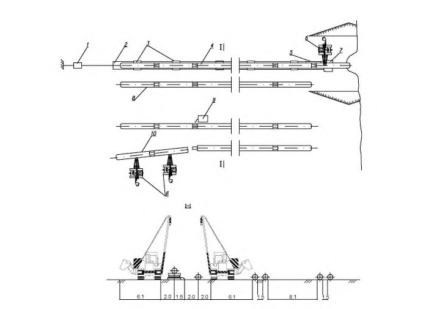
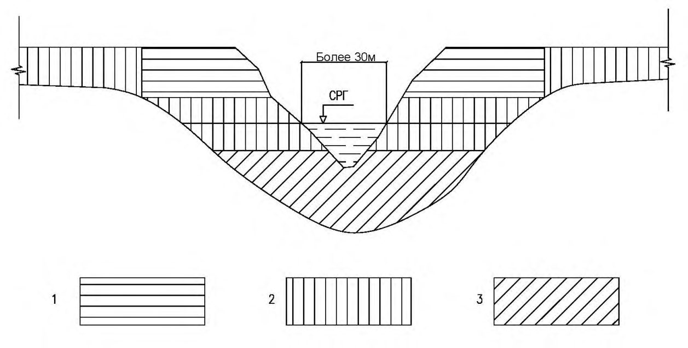
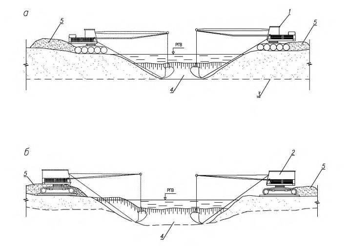
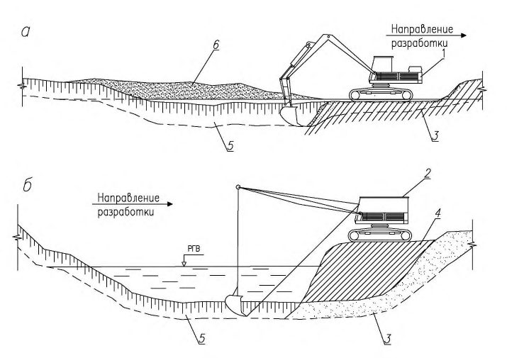
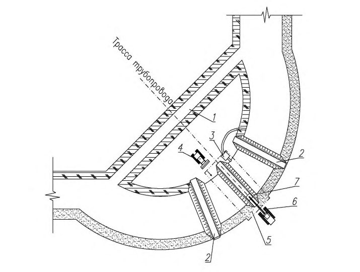
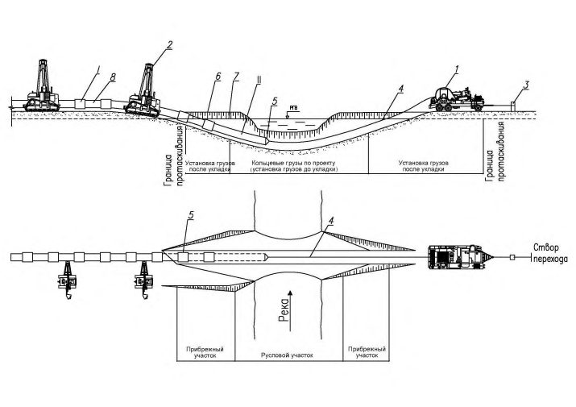
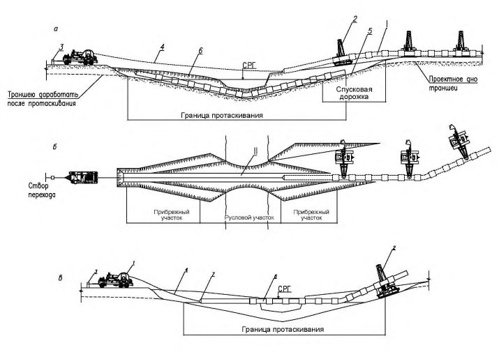
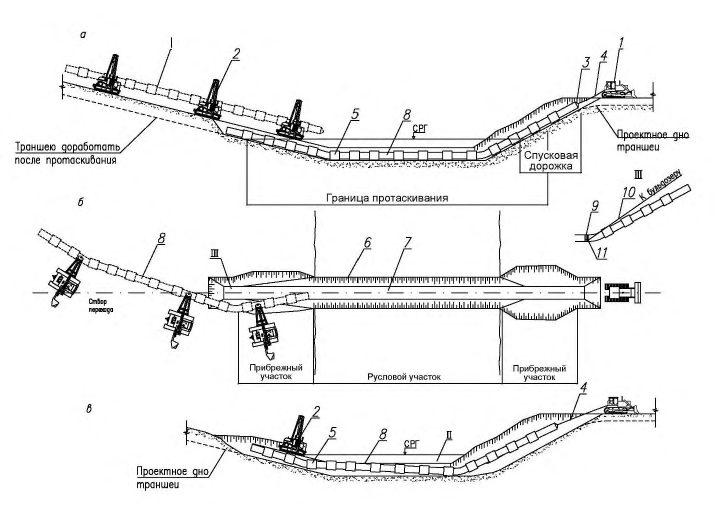
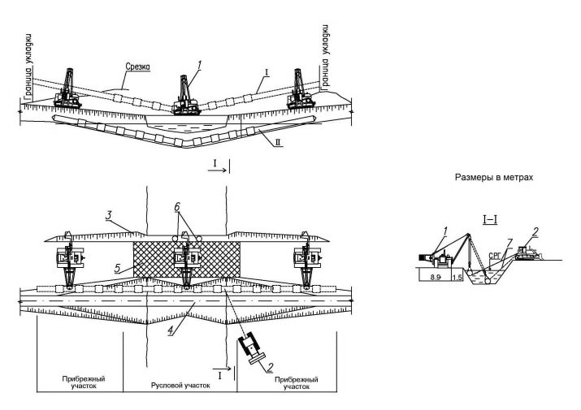

СП 422.1325800.2018 «Трубопроводы магистральные и промысловые для нефти и газа.»
Приказ Минстроя № 855/пр от 24.12.2018Введён 25.06.2019
Справочная интерактивная копия для удобной работы с документом.
Не является официальным опубликованием. Официальный источник —
Минстрой России.
Перед применением проверяйте актуальность редакции и перечень обязательных требований.
О документе: разработчики, утверждение, регистрация, ключевые слова
СВОД ПРАВИЛ
СП 422.1325800.2018
выполнения работ
Издание официальное
1 ИСПОЛНИТЕЛЬ - ООО «Трансэнергострой»
- 2 ВНЕСЕН Техническим комитетом по стандартизации ТК 465 «Строительство»
3 ПОДГОТОВЛЕН к утверждению Департаментом градостроительной деятельности и архитектуры Министерства строительства и жилищнокоммунального хозяйства Российской Федерации (Минстрой России)
- 4 УТВЕРЖДЕН приказом Министерства строительства и жилищнокоммунального хозяйства Российской Федерации от 24 декабря 2018 г. № 855/пр и введен в действие с 25 июня 2019 г.
- 5 ЗАРЕГИСТРИРОВАН Федеральным агентством по техническому регулированию и метрологии (Росстандарт)
В случае пересмотра (замены) или отмены настоящего свода правил соответствующее уведомление будет опубликовано в установленном порядке. Соответствующая информация, уведомление и тексты размещаются также в информационной системе общего пользования - на официальном сайте разработчика (Минстрой России) в сети Интернет
Настоящий нормативный документ не может быть полностью или частично воспроизведен, тиражирован и распространен в качестве официального издания на территории Российской Федерации без разрешения Минстроя России
Дата введения - 2019-06-25
УДК
ОКС 91.100.01
Ключевые слова: магистральные трубопроводы для нефти и газа, промысловые трубопроводы для нефти и газа, строительство подводных переходов, балластировка подводных трубопроводов, земляные работы при строительстве подводных переходов, организационно-техническая подготовка строительства подводных переходов
Руководитель организации-разработчика ООО «Трансэнергострой»
Руководитель разработки
Генеральный директор должность
__________________ личная подпись
И.В. Вьюницкий инициалы, фамилия А.В. Фомин инициалы, фамилия
Исполнитель Исполнитель
Начальник отдела экспертизы промышленной безопасности объектов ТЭК должность Руководитель группы стандартизации
__________________ личная подпись
С.А. Артемьева инициалы, фамилия
Исполнитель
ТЭК должность Помощник генерального директора должность
личная подпись __________________ личная подпись
Д.З. Стерелюхина инициалы, фамилия
Введение
6 ВВЕДЕН ВПЕРВЫЕ
Настоящий свод правил разработан в соответствии с федеральными законами от 29 декабря 2004 г. № 190-ФЗ «Градостроительный кодекс Российской Федерации», от 30 декабря 2009 г. № 384-ФЗ «Технический регламент о безопасности зданий и сооружений», от 23 ноября 2009 г. № 261ФЗ «Об энергосбережении и повышении энергетической эффективности и о внесении изменений в отдельные законодательные акты Российской Федерации».
Настоящий свод правил разработан авторским коллективом ООО «Трансэнергострой» (канд. хим. наук И.В. Вьюницкий, канд. техн. наук А.А. Башлыков, С.А. Артемьева, А.В. Фомин, В.А. Клинников, Д.З. Стерелюхина ) .
1Область применения
Настоящий свод правил распространяется на строительство и контроль выполнения работ на подводных переходах через водные преграды (реки, озера, водохранилища, обводненные и заболоченные речные поймы) магистральных и промысловых трубопроводов для нефти, газа и нефтепродуктопроводов с условным диаметром до DN 1400 и избыточным давлением среды:
не выше 10 МПа -для магистральных трубопроводов и нефтепродуктопроводов;
не выше 32 МПа - для промысловых трубопроводов.
Свод правил устанавливает требования к балластировке подводных трубопроводов, строительству подводных переходов методами укладки в открытую траншею, горизонтального направленного бурения, «труба в трубе», микротоннелирования, берегоукрепительным работам при строительстве подводных переходов, контролю выполнения работ и охране окружающей среды.
Настоящий свод правил не распространяется на строительство переходов морских трубопроводов.
Строительство подводных переходов и контроль выполнения работ
Main and field pipelines for oil and gas.
Construction of underwater crossings and control of works
2Нормативные ссылки
В настоящем своде правил использованы нормативные ссылки на следующие документы:
ГОСТ 19179-73 Гидрология суши. Термины и определения
ГОСТ 24950-81 Отводы гнутые и вставки кривые на поворотах линейной части стальных магистральных трубопроводов. Технические условия
ГОСТ 27751-2014 Надежность строительных конструкций и оснований. Основные положения
ГОСТ 33213-2014 (ISO 10414-1:2008) Контроль параметров буровых растворов в промысловых условиях. Растворы на водной основе
ГОСТ Р 52132-2003 Изделия из сетки для габионных конструкций. Технические условия
ГОСТ Р 58033-2017 Здания и сооружения. Словарь. Часть 1. Общие термины
СП 21.13330.2012 «СНиП 2.01.09-91 Здания и сооружения на подрабатываемых территориях и просадочных грунтах» (с изменением № 1)
СП 36.13330.2012 «СНиП 2.05.06-85* Магистральные трубопроводы» (с изменением № 1)
СП 45.13330.2017 «СНиП 3.02.01-87 Земляные сооружения, основания и фундаменты» (с изменением № 1)
СП 48.13330.2011 «СНиП 12-01-2004 Организация строительства» (с изменением № 1)
СП 68.13330.2017 «СНиП 3.01.04-87 Приемка в эксплуатацию законченных строительством объектов. Основные положения»
СП 86.13330.2014 «СНиП III-42-80* Магистральные трубопроводы» (с изменениями № 1, № 2)
СП 93.13330.2016 «СНиП 2.01.54-84 Защитные сооружения гражданской обороны в подземных горных выработках»
СП 121.13330.2012 «СНиП 32-03-96 Аэродромы»
СП 126.13330.2017 «СНиП 3.01.03-84 Геодезические работы в строительстве»
СП 245.1325800.2015 Защита от коррозии линейных объектов и сооружений в нефтегазовом комплексе. Правила производства и приемки работ
СП 249.1325800.2016 Коммуникации подземные. Проектирование и строительство закрытым и открытым способами
СП 277.1325800.2016 Сооружения морские берегозащитные. Правила проектирования
СП 284.1325800.2016 Трубопроводы промысловые для нефти и газа. Правила проектирования и производства работ
Примечание - При пользовании настоящим сводом правил целесообразно проверить действие ссылочных документов в информационной системе общего пользования -на официальном сайте федерального органа исполнительной власти в сфере стандартизации в сети Интернет или по ежегодному информационному указателю «Национальные стандарты», который опубликован по состоянию на 1 января текущего года, и по выпускам ежемесячного информационного указателя «Национальные стандарты» за текущий год. Если заменен ссылочный документ, на который дана недатированная ссылка, то рекомендуется использовать действующую версию этого документа с учетом всех внесенных в данную версию изменений. Если заменен ссылочный документ, на который дана датированная ссылка, то рекомендуется использовать версию этого документа с указанным выше годом утверждения (принятия). Если после утверждения настоящего свода правил в ссылочный документ, на который дана датированная ссылка, внесено изменение, затрагивающее положение, на которое дана ссылка, то это положение рекомендуется применять без учета данного изменения. Если ссылочный документ отменен без замены, то положение, в котором дана ссылка на него, рекомендуется применять в части, не затрагивающей эту ссылку. Сведения о действии сводов правил целесообразно проверить в Федеральном информационном фонде стандартов.
3Термины и определения
В настоящем Своде правил применены термины по [1], СП 21.13330, СП 36.13330, СП 86.13330, СП 93.13330, СП 249.1325800, СП 277.1325800, ГОСТ 19179, ГОСТ Р 58033, а также следующие термины с соответствующими определениями:
3.1береговой участок
Участок, ограниченный с одной стороны горизонтом низких вод 95 %-ной обеспеченности, с другой стороны границами перехода.
3.2бентонит
Глина, состоящая в основном из минералов группы монтмориллонита, обладающая выраженными сорбционными свойствами и высокой пластичностью.
3.3водомерный пост
Пункт на водном объекте, оборудованный устройствами для проведения систематических измерений высоты уровня воды в данном месте водоема.
3.4входной контроль
Контроль продукции поставщика, поступившей к потребителю или заказчику и предназначаемой для использования при изготовлении, ремонте или эксплуатации продукции.Источник: ГОСТ 16504-81, статья 100
3.5стык гарантийный
Кольцевой стык, свариваемый по специальной технологии и не подвергающийся испытанию внутренним давлением.
3.6границы подводного перехода
Участок трубопровода, ограниченный: - для однониточного перехода и основной нитки многониточного перехода - запорной арматурой, установленной на берегах, а при ее отсутствии (на газопроводах) - участок, ограниченный горизонтом высоких вод не ниже отметок 10 %-ной обеспеченности; для резервной нитки многониточного перехода, оборудованного камерами пуска (приема) средств очистки (диагностики), - затворами камеры пуска и камеры приема средств очистки (диагностики), установленных на этой нитке. При отсутствии камеры пуска и камеры приема средств очистки (диагностики) границы подводного перехода для резервной нитки - участок, ограниченный запорной арматурой, установленной на берегах.
3.7дюкер
Участок трубопровода, прокладываемый на пересечении с водной преградой под руслом реки или водоема.
3.8защитный (опережающий) экран
Временная конструкция крепи подземного сооружения, образуемая последовательно прокладываемыми методом микротоннелирования трубами, связанными между собой направляющими замками в сплошной защитный экран.
3.9ложе водоема
Понижение земной поверхности, служащее вместилищем водоема (озера, водохранилища, пруда и т. д.).
3.10призабойная зона
Область пласта, прилегающая к забою скважины.
3.11проходка
Искусственное образование в земной коре полостей путем выемки грунта механизированным или ручным способом.
3.12проходческий щит
Подвижная металлическая крепь, ограждающая забойную зону от окружающего грунтового массива.
3.13рекультивация земель
Комплекс работ, направленных на восстановление продуктивности и народнохозяйственной ценности нарушенных земель, а также на улучшение условий окружающей среды в соответствии с интересами общества.Источник: ГОСТ 17.5.1.01-83, статья 4
3.14рефулер (грунтопровод)
Плавучий трубопровод для перемещения пульпы от земснаряда к месту укладки.
3.15русловой участок
Участок, расположенный в русле реки (водотока) или в ложе водоема (озера, водохранилища, пруда и т. д.).
3.16створ перехода
Плановое положение и вертикальная плоскость, соответствующие проектной оси подводного перехода - линейный участок реки, ограниченный специальными знаками на обоих берегах, определяющими размещение подводного перехода.
3.17тампонажный раствор
Рационально составленная, перемешанная до однородного состояния смесь вяжущего вещества (цемента или многокомпонентного вяжущего), заполнителя (песка, песчано-известковой смеси, гравия и др.), воды и добавок.
3.18тоннель ( здесь )
Горизонтальное или наклонное подземное искусственное сооружение, предназначенное для размещения коммуникаций.
3.19урезный участок
Участок подводного перехода, находящийся в границах уреза воды.
4Сокращения
В настоящем своде правил применены следующие сокращения:
При строительстве подводных переходов магистральных и промысловых трубопроводов следует руководствоваться требованиями СП 36.13330, СП 45.13330, СП 48.13330, СП 86.13330, СП 126.13330, СП 245.1325800, СП 284.1325800, проектной и рабочей документацией, настоящим сводом правил и другими нормативными документами, утвержденными в установленном порядке.
Требования к перевозке, погрузке, разгрузке и складированию труб, предназначенных для строительства подводных переходов магистральных и промысловых трубопроводов, приведены в СП 86.13330 и [15]. Ремонт труб, предназначенных для строительства подводных переходов, не допускается.
Требования к сварочным работам при строительстве подводных переходов магистральных и промысловых трубопроводов и контролю выполнения работ приведены в СП 86.13330, СП 284.1325800, [6], [7], [16].
При строительстве подводных переходов должны использоваться трубы с заводской изоляцией усиленного типа независимо от диаметра трубопровода. Производство и контроль выполнения изоляционных работ должны осуществляться в соответствии с требованиями СП 86.13330.
Участки трубопроводов, прокладываемые методами ГНБ и микротоннелирования, должны иметь заводскую изоляцию специального типа в соответствии с проектной документацией.
Сварные монтажные швы на участках трубопроводов, прокладываемых методом ГНБ, должны быть изолированы термоусаживающимися манжетами в соответствии с проектной документацией.
Требования к контролю выполнения отдельных видов работ при строительстве подводного перехода и составлению форм исполнительной документации приведены в СП 86.13330, [11], [18].
Требования охраны труда и техники безопасности при производстве работ по строительству подводных переходов трубопроводов приведены в [7], [8], [19]-[21], [23], [24].
Организационно-техническая подготовка строительства должна проводиться в соответствии с СП 48.13330 и [1]. При организационнотехнической подготовке лицо, осуществляющее строительство, должно провести следующие мероприятия:
принять от застройщика (технического заказчика) трассу (створы) подводного перехода в натуре с закрепляющими знаками. Передача трассы должна быть оформлена актом с приложением плана перехода и ведомости планово-высотного обоснования; реперы и выносные знаки должны иметь абрис относительно характерных пунктов на местности. Ось трассы и углы ее поворотов должны быть закреплены выносными опорными знаками в двухтрех точках за пределами строительной площадки; при этом ось трассы закрепляется на каждой стороне водоема;
проверить наличие основных реперов и установить временные на период строительства перехода. При ширине реки до 200 м устанавливают по одному реперу на каждом берегу, более 200 м - не менее двух реперов на каждом берегу. Реперы располагают за пределами разрабатываемых береговых траншей и строительной площадки;
выполнить контрольную нивелировку основных и привязку к ним временных реперов;
выполнить нивелировку по створам подводных трубопроводов на переходе с промерами подводного участка трассы;
осуществить проверку и разбивку углов поворота и кривых трассы в пределах перехода с выносом закрепляющих знаков за пределы участков работы землеройных механизмов и отвалов грунта;
уточнить ширину водоема при расстояниях между урезами воды - по тонкому тросу между берегами или с помощью геодезического инструмента с разбивкой берегового базиса;
закрепить в натуре все характерные точки проектного профиля в пределах незатопленной части перехода с выносом знаков за пределы производства земляных работ;
установить временный водомерный пост с привязкой его к реперу.
Лицо, осуществляющее строительство, в последующем обеспечивает сохранность знаков и водомерных постов и передачу их застройщику (техническому заказчику) после завершения строительства подводного перехода.
Состав временных сооружений (в том числе выполняемых в минимальных объемах, необходимых для производства основных работ при строительстве перехода) должен быть определен ПОС и уточнен ППР.
Для сокращения сроков строительства бытовых, хозяйственных и вспомогательных помещений целесообразно использовать блочно-модульные здания и сооружения (передвижные дома-вагончики, брандвахты, сборноразборные складские и хозяйственные помещения и пр.).
Для нужд строительства переходов необходимо максимально использовать существующую дорожную сеть (грунтовые, лежневые и другие дороги), при необходимости строить новые временные подъездные дороги, предусмотренные проектными решениями и ППР.
Существующие дороги, используемые для нужд строительства, при необходимости (в соответствии с проектной документацией и ППР) ремонтируют, а во время строительства поддерживают в рабочем состоянии.
В зимний период для подъезда к строительным площадкам на переходах могут использоваться зимние и ледовые дороги (ледовые переправы), с дополнительным, при необходимости, намораживанием льда.
Необходимость оборудования временными причалами для приемки грузов определяется проектной документацией в зависимости от транспортной доступности района строительства.
Временные взлетно-посадочные площадки для вертолетов вблизи переходов, предусмотренные проектной документацией, должны сооружаться в соответствии с СП 121.13330.
Подготовка строительства переходов через водные преграды предусматривает проведение следующего комплекса организационных мероприятий:
передача застройщиком (техническим заказчиком) лицу, осуществляющему строительство, утвержденного в установленном порядке комплекта проектной и рабочей документации. Лицо, осуществляющее строительство, в процессе приемки проводит проверку передаваемой документации;
заключение договора подряда (субподряда) на строительство перехода;
приемка трассы (створа) подводного перехода (6.2) и получение от застройщика (технического заказчика) разрешения на его строительство;
разработка лицом, осуществляющим строительство, ППР и согласование его с застройщиком (техническим заказчиком);
получение письменного разрешения на производство работ в охранной зоне;
оформление разрешительных документов на использование земель (земельных участков) для размещения строительных площадок и временных сооружений;
получение паспорта на отходы производства и разрешение на захоронение бурового раствора и шлама после строительства (при строительстве подводного перехода методом ГНБ);
уведомление землепользователей, владельцев проложенных рядом коммуникаций, природоохранных органов о сроках проведения работ.
Основным документом для проведения подготовки к строительству переходов является ППР, разработанный лицом, осуществляющим строительство, выполненный на основании ПОС.
В состав ППР входят перечень организационных и технических работ с последовательностью их выполнения, набор технологических карт производственных процессов, выполняемых с учетом пооперационного контроля, прочие требования экологической и промышленной безопасности.
Разработку ППР необходимо выполнять с учетом технической оснащенности лица, осуществляющего строительство, механизмами и оборудованием. В ППР должны быть указаны площадки размещения механизмов, оборудования и материалов, проработаны маршруты их доставки до мест складирования. График проведения строительных работ должен учитывать все этапы работ, в том числе сроки проведения организационных мероприятий до и после выполнения основных строительно-монтажных работ, сроки монтажа (демонтажа) временных зданий и сооружений.
При разработке ППР на строительство многониточных переходов следует предусматривать последовательное выполнение отдельных видов работ (сварка, изоляция и др.) по каждой нитке для исключения перерывов в строительстве первой и последующих ниток трубопроводов.
При транспортировке секций (плетей) трубопровода должны быть приняты необходимые меры для защиты изоляции от повреждения. Погрузку, разгрузку и перемещение труб и сварных деталей трубопровода с тепловой и противокоррозионной изоляцией в пределах строительной площадки, а также их монтаж следует выполнять грузоподъемными средствами, оснащенными специальными траверсами или монтажными полотенцами, исключающими повреждение изоляции. Строго запрещаются сбрасывание, скатывание, соударение труб и волочение их по земле.
При складировании труб следует обеспечить устойчивость штабелей труб от раскатывания путем установки ложементов и боковых упоров под нижний ярус труб. Трубы различных типоразмеров по диаметру, толщине стенки, типу и толщине противокоррозионного и теплоизоляционного покрытия должны складироваться в разные штабели. При укладке в штабель труб различной длины их следует выравнивать по торцам с одной стороны. Следует исключать соударение труб и соединительных деталей, а также их протаскивание по штабелю при укладке труб или при подъеме труб со штабеля.
В процессе хранения не должно наблюдаться отслаивания покрытия по торцам на глубину более 2 мм.
При необходимости строительства подводных переходов в летнее время через реки с заболоченными поймами строительную площадку следует сооружать с использованием средств инженерной защиты от подтопления или методом намыва средствами гидромеханизации.
На строительных площадках подводных переходов (в том числе на заливаемых пойменных участках, расположенных в низинах (котловинах) при отсутствии устойчивых отрицательных температур окружающего воздуха), при необходимости, осуществляют водопонижение в соответствии с СП 45.13330.
Инженерно-техническую подготовку строительства переходов необходимо завершить до начала основных строительно-монтажных работ с оформлением акта на выполненные работы.
7Земляные работы при строительстве подводных переходов траншейным способом
7.1Подготовительные работы при выполнении земляных работ
При подготовке к земляным работам на береговых и пойменных участках переходов необходимо:
оформить разрешительные документы на использование земель (земельных участков) для размещения временных зданий и сооружений, участка производства работ;
вынести в натуру геодезические разбивочные знаки;
закрепить оси переходов (пикеты) геодезическими знаками с привязкой их к оси трассы трубопровода;
провести детальную разбивку горизонтальных кривых переходов трубопровода с выносом пикетов за пределы строительной полосы отвода;
разработать проекты производства земляных работ;
провести расчистку под производственные и бытовые объекты в границах полосы отвода от леса, пней, кустарника, крупных камней и лесопорубочных материалов с последующей проверкой площади расчистки;
выполнить срезку (при необходимости) плодородного почвеннорастительного слоя грунта и его укладку в отвалы для последующей рекультивации;
выполнить планировку строительной полосы отвода с засыпкой ям, выравниванием микрорельефа, срезкой склоновых продольных и поперечных бугров, засыпкой низинных мест;
подготовить временные грунтовые (в районах тундры - насыпные) дороги и строительные площадки;
обеспечить контроль выполнения и приемку земляных работ от строительных подразделений.
Участки срезки и складирования почвенно-растительного слоя грунта закрепляются вешками, видимыми бульдозеристом во время работы.
Срезку грунта проводят слоями в соответствии с указаниями ППР с учетом уклонов и неровностей территории.
Проверка работы осуществляется лицом, осуществляющим строительство, геодезическим инструментом в целях уточнения глубины и объемов срезки и их соответствия требованиям проектной документации.
Строительные полосы и строительные площадки в створах переходов должны быть ровными, без резких перепадов высот.
Контроль выполнения подготовки полосы (площадки) отвода выполняется лицом, осуществляющим строительство, визуально и инструментально с периодичностью замеров 100 м.
При строительстве внутриплощадочных дорог лицом, осуществляющим строительство, в процессе работ осуществляется проверка ширины проезжей части и отметок насыпи, состояния полотна, откосов и кюветов.
Щиты под экскаватор могут быть как заводского, так и трассового изготовления. Конструкция вдольтрассовых дорог и площадок должна быть определена проектной документацией (уточнена в ППР) с учетом массы экскаватора и несущей способности обводненных грунтов.
Устройство подводной траншеи для укладки трубопровода в дно реки или водоема следует осуществлять с применением специальных механизмов. Способ разработки, отметки и размеры (в том числе ширина)
СП 422.1325800.2018 подводной траншеи указываются в проектной документации, с учетом требований СП 36.13330, СП 86.13330, СП 249.1325800.
До начала подводных земляных работ необходимо выполнить водолазное обследование дна водоема для выявления наличия в створе посторонних предметов (бревен, крупных валунов, затонувших предметов), способных помешать работе механизмов при разработке траншей. В случае обнаружения таких предметов на обоих берегах вблизи уреза воды (для лучшей видимости) в местах их расположения устанавливают временные плавучие или береговые знаки (буи, вехи). После удаления посторонних предметов знаки снимают.
Также до начала подводных земляных работ выполняют гидрографическую съемку в границах ширины раскрытия траншеи для сопоставления с данными, представленными в проектной документации.
Разработка траншей, котлованов, насыпей и других сооружений на береговых и других участках переходов при всех способах их строительства выполняется в соответствии с требованиями проектной документации и ППР с использованием технических средств лица, осуществляющего строительство.
Перед разработкой траншей в русловой части переходов лицо, осуществляющее строительство, совместно с застройщиком (техническим заказчиком) проводит контрольные промеры отметок дна рек (водоемов) по створам переходов на предмет отступления от отметок (профиля) дна по створу перехода, представленных в проектной документации, в целях подтверждения правильности минимальной(ых) отметки(ок) размыва дна (профиля предельного размыва русла), представленной(ых) в проектной документации по материалам инженерных изысканий и фактических объемов земляных работ в пределах подводной траншеи.
При производстве земляных работ должен осуществляться операционный и приемочный контроль, прежде всего - на соответствие фактических отметок дна траншеи проектным значениям. Фактические отметки дна траншеи в любой точке не должны превышать проектных, перебор грунта в основании траншеи допускается на глубину не более 50 см.
Способы производства земляных работ на береговых участках переходов обосновываются проектной документацией и конкретизируются лицом, осуществляющим строительство, в ППР с учетом:
рельефа берегов и поймы;
физико-механических свойств грунтов;
наличия землеройной техники;
объемов работ и сроков их выполнения;
условий судоходства;
климатических условий производства работ;
экологических требований;
требований организаций, чьи коммуникации находятся вблизи или пересекаются строящимся переходом.
В зависимости от параметров разрабатываемой траншеи, высоты и уклонов берегового склона применяемые в процессе земляных работ техника и оборудование могут использоваться раздельно или совместно. Типовая схема комплексной разработки траншей на береговых и урезных участках переходов, включая русловые, приведена на рисунке А.1. Земляные работы, согласно данной схеме, предусматривают срезку растительного слоя и части склона, разработку траншеи на высоких отметках экскаватором и бульдозером, а ниже уровня воды - земснарядом или экскаватором с понтона.
При устройстве подводной траншеи участок, подвергающийся интенсивному заносу, разрабатывают в последнюю очередь, непосредственно перед укладкой трубопровода.
Разработку траншей на обводненных и заболоченных поймах следует начинать с урезной части перехода в целях обеспечения стока воды в реку, дренирования и осушения поймы в зоне перехода.
При разработке траншей в мерзлых и скальных породах или тяжелых глинах, находящихся под слоем наносных грунтов, следует удалять сначала легкие наносные грунты (при большой их толщине), а затем, после предварительного рыхления, твердые породы (рисунок А.2.).
При наличии мерзлых или скальных грунтов предварительное рыхление допускается проводить буровзрывным или механизированным (бурение, дробление) способом, если это предусмотрено проектной документацией.
СП 422.1325800.2018
Для рыхления многолетнемерзлых грунтов допускается применять также способы (например, гидрооттаивание) и оборудование, определяемые в ППР.
Предварительное рыхление (частичное или сплошное) грунтов на русловых участках подводных переходов механическим или взрывным способом допускается только при обосновании в проектной документации.
Подводные взрывные работы могут быть выполнены методами накладных (для разделки отдельных камней), шпуровых и скважинных зарядов. Методы взрывных работ, максимальная масса взрываемых зарядов и безопасное расстояние должны быть указаны в проектной документации.
Заряды следует укладывать на скальное дно водоема, очищенное от илистых и песчаных наносов. Очистку от наносов выполняют гидромониторами или грунтососами.
Удаление разработанного земснарядами грунта по пульпопроводам должно осуществляться в подводные отвалы или береговые карты намыва. Способ удаления грунта и места отвалов согласовываются с землепользователями, водопользователями [3, статья 1, пункт 8], а также контролирующими их деятельность организациями (например, рыбоохранные, контролирующие судоходство и т. д.)
Загрузку шаланд черпаковым земснарядом проводят либо поочередно с обоих бортов земснаряда без прекращения его работы на время смены или перемещения шаланды, либо с одного борта в случае недостаточной глубины или при работе в стесненных условиях. Во всех случаях потери времени на замену и перемещение шаланд должны быть минимальными.
Процесс загрузки шаланд и транспортировки ими грунта должны быть организованы так, чтобы исключить или свести к минимуму простои земснаряда в ожидании подхода или перестановки шаланды.
Допускается засыпка подводных траншей местным грунтом, если в проектной документации не предусмотрены особые требования к грунту. Засыпка траншей может выполняться путем:
рефулирования грунта земснарядами по пульпопроводу;
сброса грунта саморазгружающимися шаландами;
сброса грунта из барж путем выгрузки его грейфером или перекачивания грунта из барж грунтососами;
сброса грунта с баржи-площадки бульдозером;
сброса грунта с баржи-площадки экскаватором;
сталкивания грунта с береговых отвалов бульдозером;
самосвалами (в зимний период при достаточной прочности льда).
При засыпке подводных траншей необходимо учитывать унос сбрасываемого грунта течением за пределы траншеи и поступление донных наносов, переносимых в траншею потоком. Объем уносимого потоком грунта при сбросе его в воду и заносимость траншеи донными наносами определяются расчетами в проектной документации с учетом характеристики грунта и режима водного потока и уточняются в ППР на основе анализа конкретных условий на реке перед началом строительства перехода. Ориентировочно объем уносимого грунта принимают в пределах 10 % - 20 % общего объема засыпки траншеи на переходе.
Сброс грунта в траншею при ее засыпке допускается осуществлять при погружении концевого звена пульпопровода в воду в целях снижения его уноса и загрязнения водной среды.
На крутых склонах, во избежание сползания грунтовой засыпки вниз к воде, следует применять барьерные сооружения, которые определяются проектной документацией и уточняются в ППР.
В процессе разработки, подчистки и засыпки траншей в целях обеспечения необходимого качества работ проводят систематическое визуальное наблюдение и инструментальную проверку соответствия выполняемых работ требованиям проектной документации и ППР. Контролю подлежат ширина и глубина траншеи, откосы траншеи и отвалы на бровке, отметки верха засыпки траншеи.
Разработку подводных траншей при одновременном строительстве в коридоре двух или более ниток трубопроводов следует начинать с нижней по течению нитки трубопровода.
7.4Особенности технологии производства подводных земляных работ на реках небольших ширины и глубины
На реках с глубиной до 0,5 м для разработки траншей применяют экскаватор с обратной лопатой с перемещением по дну реки. При глубине более 0,5 м и скорости течения 0,1-0,3 м/с экскаватор может работать с насыпной дамбы (рисунок Б.2).
На реках шириной до 30 м и глубиной 0,5-1,5 м разработка траншеи при благоприятных геологических условиях может проводится экскаватором-драглайном, поочередно сначала с одного, а затем с другого берега: на одном берегу разработку начинают от берега к середине реки, на другом - от середины реки к берегу (рисунок Б.3, б ). Грунт транспортируют на берег в отвалы бульдозером. Проектной документацией может допускаться также предварительное сужение русла реки с обоих берегов с помощью бульдозера путем перемещения в русло земляных насыпей с последующим размещением на них экскаваторов.
При глубине реки свыше 1,5 м также возможна разработка траншеи экскаватором с понтона. (рисунок Б.3, а ).
Канатно-скреперные установки рекомендуется применять с ковшами 3,0-3,5 м³ при ширине траншей по дну от 1,5 до 2 м и длиной до 300 м. При разработке траншей шириной по дну до 1,5 м и длиной до 150 м рекомендуется применять КСУ со спаренными ковшами 1,0-1,5 м³ или с ковшами 0,75 м³ . Технологические схемы разработки подводных траншей с помощью КСУ приведены на рисунке Б.4.
При наличии многорукавных, мелководных русловых участков траншеи допускается разрабатывать экскаваторами с поочередным перекрытием отдельных рукавов временными насыпными дамбами.
Засыпку береговых и русловых участков подводных переходов необходимо выполнять непосредственно после предусмотренных в проектной документации работ по укладке и испытанию трубопровода.
7.5Особенности проведения земляных работ при строительстве подводных переходов в зимних условиях
Необходимость проведения земляных работ на переходах в зимнее время может быть обусловлена трудностью подъезда к месту строительства перехода при сильной обводненности территории в летнее время, сжатыми сроками строительства, невозможностью использования летнего варианта строительства перехода из-за легкой ранимости почвенно-растительного слоя в тундровой и лесотундровой зонах.
Технология и организация земляных и подводно-технических работ в зимних условиях определяется, в основном, характеристикой водной преграды, ледовой обстановкой и температурным режимом донных грунтов и должна быть изложена в проектной документации и уточнена в ППР.
При разработке подводных траншей в зимнее время в ПОС и ППР должно быть предусмотрено выполнение дополнительных работ:
промораживание верхнего слоя грунтов с устройством зимних проездов для автотранспорта и строительной техники;
нарезание ледорезной машиной прорезей в ледовом покрове или рыхление льда механическим способом с последующим удалением его в целях создания майн (свободной ото льда поверхности воды) для перемещения в них либо непосредственно земснарядов, либо их рабочей стрелы (при работе земснарядов со льда);
предохранение от намораживания пульпы на стенки рефулера и его замерзания;
подготовка техники для работы в зимних условиях;
поддержание несущей способности льда путем его дополнительного намораживания для обеспечения движения техники и земснарядов по льду.
Период производства земляных работ при разработке подводной траншеи в зимних условиях определяется состоянием и продолжительностью сохранения ледового покрова, а также требованиями к его прочности.
Выполнение работ на льду, связанных с установкой оборудования, размещением материалов, движением транспортных средств и техники по льду, разрешается только после определения его несущей способности при условии соблюдения правил техники безопасности и сравнения приведенной толщины льда с расчетной (допустимой), принятой в проектной документации.
На урезных и пойменных участках подводных переходов перед началом земляных работ в зимнее время, при необходимости промораживания грунта, должен быть удален снег с полосы будущей траншеи.
В случае невозможности устройства подводной траншеи полного профиля в летний период допускается частичная разработка траншеи в зимнее время со льда с доработкой ее перед укладкой трубопровода зимой средствами малой механизации (грунтососами и гидромониторами).
Строительно-монтажные работы на переходах в условиях Крайнего Севера выполняются в зимний строительный сезон при промерзании деятельного слоя на глубину, исключающую разрушение почвеннорастительного покрова строительной техникой, движение которой допускается по подготовленным зимним технологическим дорогам.
При строительстве дорог с насыпным грунтовым основанием на многолетнемерзлых грунтах отсыпку полотна дороги следует осуществлять способом «от себя», не допуская выезда техники и транспорта за пределы отсыпанного полотна. Грунт для полотна дороги следует отсыпать непосредственно на мохово-растительный покров или на снежный покров с предварительным выравниванием снежных бугров.
Промораживание плохо замерзающих участков территории на переходах в границах строительных площадок осуществляют уплотнением растительного покрова гусеничной техникой с давлением ее на грунт не более 0,025 МПа (0,25 кг/см² ) и удалением на полосе отвода снега с последующим его складированием и разравниванием за пределами рабочей полосы.
При производстве работ всех видов на льду особое внимание должно быть уделено соблюдению правил техники безопасности.
При подготовке пульпопровода земснаряда к работе в зимних условиях необходимо обеспечить его гибкость без нарушения герметичности стыков, а также возможность перемещения его при движении земснаряда.
Для перемещения по льду пульпопровод устанавливают на санные полозья, которые располагают в местах шарнирных соединений.
Рыхление линз мерзлых и многолетнемерзлых грунтов проводят буровзрывным, механическим или другим способом, а их разработку экскаватором (при малых глубинах) или КСУ.
При разработке траншей в зимний период на береговых и пойменных участках переходов в условиях сезонного промерзания грунтов на глубину до 30-40 см их рыхление проводят механическим способом (гидромолотом, бульдозером-рыхлителем и др.).
При промерзании грунтов свыше 40 см и на участках с многолетнемерзлым грунтом разработку береговых и пойменных траншей перехода допускается проводить с применением буровзрывной технологии, если это разрешено проектной документацией.
Разработку мерзлых грунтов под водой и на береговых участках перехода проводят с применением скважинных, шпуровых, накладных, кумулятивных и комбинированных зарядов. Скважинные заряды применяют при глубине разработки пород свыше 1 м, шпуровые - при глубине разработки от 0,5 до 1,0 м включительно и накладные - при глубине разработки до 0,5 м включительно.
Шпуровые и накладные заряды могут быть применены для доработки траншей до проектного профиля, дробления негабаритов, подработки траншеи и выполнения других незначительных по объему работ.
Для взрыва мерзлых грунтов в подводных условиях следует использовать водоустойчивые взрывчатые вещества, способные сохранять свои свойства в течение необходимого времени пребывания под водой.
Виды взрывчатого вещества и средств взрывания принимают в соответствии с требованиями ППБР.
На урезных и пойменных участках смерзающийся в отвале грунт перед засыпкой трубопроводов разрыхляют механическим или буровзрывным способом с применением шпуровых зарядов.
При засыпке трубопровода в траншее мерзлым грунтом сверху трубопровода предварительно засыпают разрыхленный грунт.
Во избежание заноса траншей снегом и смерзания грунта в отвале время разработки траншеи должно соответствовать времени укладки и засыпки трубопровода.
Способ укладки трубопроводов в зимних условиях через русло определяется проектной документацией и ППР с учетом ледовой обстановки, параметров трубопровода, характеристики тяговых средств, глубины воды подо льдом, скорости течения и других факторов.
В зимних условиях тяговый трос для протаскивания трубопровода прокладывают по дну траншеи одновременно с устройством во льду прорези, при этом скорость опускания (прокладки) троса должна соответствовать скорости перемещения ледорезной машины для предупреждения замерзания прорези перед опусканием троса.
Протаскивание тягового троса без устройства прорези допускается проводить путем проталкивания его под толщей ледяного покрова через лунки во льду деревянной рейки с тросом-проводником с последующим вытягиванием на противоположный берег тягового троса (метод
«Шнуровка»). При сложной ледовой обстановке трос-проводник допускается протаскивать при помощи водолаза.
При значительной ширине водной преграды для уменьшения тягового усилия при протаскивании трубопровода участок троса, примыкающий к тяговым устройствам на берегу, допускается прокладывать по поверхности льда, а остальную часть - по дну. Протяженность этих участков определяется расчетом тяговых усилий в ППР.
При устройстве спускового пути для протаскивания трубопровода в зимних условиях срезку берега по заданному радиусу и планировочные работы следует проводить до промерзания грунта.
Ледяную дорожку устраивают на берегу, имеющем ровную площадку с небольшим уклоном. Отрывают неглубокую траншею с таким расчетом, чтобы ее можно было заполнить водой на 10-20 см. Заполнять траншею водой следует после небольшого промерзания грунта. Чтобы предотвратить сползание трубы с ледяной дорожки на участках, где спусковая дорожка выходит на естественные отметки, целесообразно по бокам дорожки устраивать ограничительные земляные валики.
Размеры входной и выходной майн необходимо принимать с некоторым запасом с учетом параметров протаскиваемого трубопровода, разгружающих понтонов, толщины льда и глубины воды.
При прокладке трубопроводов способом свободного погружения в зимних условиях применяют следующие технологические схемы производства работ:
схема I - монтаж плетей трубопровода на берегу; устройство майны на всю ширину зеркала реки или водоема; вывод трубопровода в майну с последовательной стыковкой плетей на берегу; укладка трубопровода на дно траншеи с заполнением его водой;
схема II - монтаж трубопровода из звеньев длиной по 30-36 м на льду по створу перехода; устройство майны параллельно смонтированному трубопроводу; спуск трубопровода в майну и укладка его на дно траншеи с заполнением его водой.
При монтаже на льду трубопровод необходимо укладывать на лежки.
Для предотвращения сноса трубопровода течением во время погружения его на дно реки необходимо устраивать оттяжки. Число оттяжек и расстояние между ними определяются расчетом в зависимости от скорости течения.
Анкерные опоры для закрепления оттяжек устанавливают на льду выше по течению от створа перехода.
Длину оттяжек определяют в зависимости от глубины воды и принимают примерно равной 1,5 Н , где Н - глубина воды. Расстояние от трубопровода до анкерной опоры при данной длине оттяжек принимают равным 1,1 Н .
Анкерные опоры для оттяжек вмораживают или закрепляют другим способом на льду на указанном расстоянии.
Укладку трубопровода с опор, установленных на льду, следует применять только при наличии прочного льда. Укладывать трубопроводы с опор следует на переходах, где на береговых участках запроектированы гнутые отводы.
Работы по укладке трубопровода с опор, установленных на льду, необходимо выполнять в такой последовательности:
монтаж трубопровода на льду параллельно оси намеченной прорези или монтаж секций трубопровода на берегу с последующим перемещением их по льду и сваркой в одну нитку;
устройство майны для укладки трубопровода;
установка опор на льду;
спуск трубопровода в майну;
погружение трубопровода на дно с промежуточных опор.
На русловых участках подводных переходов для балластировки трубопроводов, строящихся траншейным способом, применяют сплошные покрытия (обетонированные трубы) или грузы кольцевого типа (чугунные, бетонные), конструкция которых должна обеспечивать надежное их крепление к трубопроводу.
На пойменных и прибрежных участках подводных переходов применяют отдельные бетонные грузы (кольцевые и т. д.), анкерные устройства или другие конструкции в соответствии с СП 86.13330.
Лицо, осуществившее разработку проектной документации, выбирает способ балластировки трубопровода, определяет тип конструкций грузов и их количество и отображает это в проектной документации.
Поставка обетонированных труб лицу, осуществляющему строительство, должна сопровождаться передачей по акту предприятиемизготовителем документов, удостоверяющих соответствие стальных и обетонированных труб требованиям действующего законодательства.
Обетонированные трубы должны иметь маркировку с указанием марки изделия, номера трубы, даты изготовления, массы обетонированной трубы (с точностью до 1 %), штамп отдела технического контроля. Маркировку выполняют несмываемыми красками длительного действия либо другим согласованным способом.
При входном контроле проверяются:
геометрические параметры труб с защитным покрытием (наружный диаметр, толщина стенки, общая кривизна по длине трубы, овальность, длина концевых участков труб, свободных от бетонного покрытия и/или изоляции);
толщина бетонного покрытия;
масса труб с утяжеляющим защитным бетонным покрытием;
При выполнении погрузочно-разгрузочных работ с обетонированными трубами следует применять торцевые захваты специальной конструкции, снижающие давление на кромки труб, коники трубовозов необходимо оборудовать мягкими подкладками во избежание повреждения покрытия о его острые металлические выступы.
В качестве «подушки», требуемой по правилам складирования и хранения, для исключения повреждений полимерной оболочки допускается использовать резиновую крошку.
Складирование и хранение применяемых материалов, изделий и конструкций необходимо выполнять в соответствии с требованиями стандартов и технических условий на эти материалы, изделия и конструкции.
Обетонированные трубы должны иметь свободные от бетона и (или) изоляции концы труб, необходимые для последующего выполнения на строительной площадке сварочных и изоляционных работ при сборке отдельных труб в плеть. Длина необетонированных и (или) неизолированных концов определяется в проектной документации.
Места сварки отдельных обетонированных труб в секции или плети должны быть заизолированы (например, с использованием термоизоляционных манжет). Изоляционное покрытие в местах сварных соединений должно по своим характеристикам соответствовать изоляции труб.
Бетонное покрытие на обетонированных трубах может иметь кольцевые прорези для уменьшения жесткости труб при изгибах. Необходимость устройства прорезей определяется проектной документацией с учетом напряжений в стенках стальной трубы.
Гидравлические испытания плетей трубопроводов из обетонированных труб проводят в два этапа: до укладки плетей и после их укладки. Поперечные стыки плетей из обетонированных труб на первом этапе испытаний должны быть открытыми. Изоляцию и защитное покрытие на них следует наносить только после предварительного испытания трубопровода на давление, указанное в проектной документации.
8.3Балластировка подводных трубопроводов грузамиутяжелителями
Утяжелители УТК состоят из двух железобетонных полуколец, охватывающих трубопровод, соединяющихся между собой посредством болтов (шпилек) и гаек с шайбами. Навеску и закрепление утяжелителей проводят на берегу.
Работы по установке утяжелителей УТК выполняют в такой последовательности:
транспортировка и раскладка полуколец краном-трубоукладчиком на спусковой дорожке. При этом нижний ряд полуколец укладывают по оси спусковой дорожки, а верхний - вдоль нее;
футеровка плети или установка на плеть защитных покрытий;
укладка плети трубопровода краном-трубоукладчиком на нижний ряд полуколец;
укладку краном-трубоукладчиком верхних полуколец на трубопровод;
закрепление полуколец между собой с помощью болтовых соединений.
Утяжелители типа УЧК состоят из двух чугунных полуколец, охватывающих трубопровод, соединяющихся между собой посредством шпилек (болтов) и гаек. Навеску и закрепление утяжелителей проводят на берегу.
При монтаже утяжелителей на нескольких плетях трубопровода расстояние между плетями должно обеспечивать проезд крановтрубоукладчиков, грузоподъемных кранов, автомобилей для выполнения сварочно-монтажных, изоляционных и других работ.
Погрузку, разгрузку, складирование и раскладку полуколец утяжелителей проводят за монтажные петли грузоподъемными кранами или кранами-трубоукладчиками соответствующей грузоподъемности.
Технология установки грузов-утяжелителей и анкерных устройств на пойменных участках подводных переходов совпадает с технологией балластировки заболоченных участков линейной части трубопроводов в соответствии с СП 86.13330.
При производстве и приемке работ по балластировке и закреплению трубопроводов следует осуществлять входной, операционный и приемочный контроль в соответствии с разделом 14.
9Строительство подводных переходов методом укладки в открытую траншею
Способ строительства трубопровода на подводном переходе определяется проектной документацией, а технология укладки разрабатывается лицом, осуществляющее строительство, в ППР с учетом технических возможностей и оснащенности, а также следующих факторов:
рельеф местности в створе перехода (крутизна береговых склонов, ширина водоема, рельеф пойменных участков);
гидрологические условия (глубина водоема, скорость течения), условия судоходства;
характеристика ледового покрова при производстве работ зимой;
параметры (диаметр, толщина стенки, длина трубопровода) и весовые характеристики укладываемого трубопровода.
При составлении ППР на укладку подводного трубопровода должны быть учтены строительные нагрузки на трубопровод, приведенные в проектной документации. Нагрузки на трубопровод (в том числе во время строительства) определяются в проектной документации и уточняются в ППР с учетом фактических характеристик разгружающих понтонов и их расстановки на трубопроводе, иного предусмотренного в ППР оборудования для сооружения подводного перехода трубопровода.
проверить и испытать все технические средства и их взаимодействие, проверить средства связи, провести инструктаж персонала и определить ответственность каждого исполнителя за свой участок работы;
проверить отметки продольного профиля траншеи, а также профиль спусковых устройств при участии представителей технического надзора.
Засыпку подводной траншеи, в которую уложен трубопровод, следует выполнять непосредственно после укладки трубопровода, контрольных промеров, подтверждающих укладку трубопровода на проектные отметки, и его испытания.
После проверки изоляции способом катодной поляризации уложенный подводный трубопровод сваривают с пойменным участком перехода. При необходимости уменьшения напряжений в уложенном подводном трубопроводе приварку его к пойменному участку следует проводить при температурах, близких к температуре перекачиваемого продукта.
При выявлении способом катодной поляризации снижения сопротивления изоляционного покрытия ниже нормативного следует провести электрометрическое обследование для выявления точных мест расположения дефектов изоляционного покрытия. В случае затруднения или невозможности проведения ремонта (например, в случае прокладки дюкера методом ГНБ) следует вместо ремонта дефектов изоляционного покрытия в русловой части выполнить устройство дополнительной компенсационной ЭХЗ подводного перехода, на которую должна быть разработана рабочая документация.
Примечание - при строительстве подводного перехода методом ГНБ дополнительная компенсационная ЭХЗ подводного перехода выполняется путем изменения режимов действующих средств ЭХЗ, применением глубинных, протяженных или подповерхностных анодных заземлителей, протекторной защиты.
9.2Укладка трубопровода способом протаскивания по дну
Для уменьшения массы (отрицательной плавучести) участка трубопровода, находящегося под водой, и соответственно тяговых усилий при протаскивании, необходимо использовать разгружающие понтоны.
Тип и параметры понтонов определяются в ППР в зависимости от характеристики укладываемого трубопровода, условий судоходства, наличия ледового покрытия и других факторов.
Конструкция спусковой дорожки должна обеспечивать возможность монтажа и сварки на ней плетей трубопровода из отдельных обетонированных или балластированных грузами труб, а также навеску отдельных грузов на плеть трубопровода.
В зависимости от длины укладываемой плети трубопровода методом протаскивания, ее весовой характеристики, рельефа берегового участка, уклона, мощности используемых средств для протаскивания и других условий допускается использование спусковой дорожки, которая может быть выполнена в виде:
роликоопор на спланированном участке берегового склона;
Протаскивание отдельных плетей трубопроводов по спланированной грунтовой дорожке без специальных спусковых устройств допускается только при обязательной тщательной планировке берегового участка.
Трассу спусковой дорожки для трубопровода в плане намечают прямолинейной. На участке от берега до подводного участка перехода вертикальная трассировка дорожки должна быть выполнена криволинейно, с учетом допускаемого радиуса упругого изгиба трубопровода.
Длина спусковой дорожки должна обеспечивать монтаж трубопровода на полную длину его подводного участка или на длину отдельных плетей на случай протаскивания трубопровода с последовательным их наращиванием и стыковкой на урезном участке.
Расстояние между роликоопорами или тележками, которые устанавливают вдоль спусковой дорожки, рассчитывают в зависимости от грузоподъемности и массы трубопровода.
Минимальный радиус кривизны спускового пути и соответствующий ему радиус упругого изгиба трубопровода определяют с учетом возможных силовых воздействий, вызывающих продольные напряжения в трубопроводе на спусковом пути.
Продольные напряжения внутреннего давления при расчете не учитывают, если гидравлические испытания плетей трубопровода проводят до их укладки на спусковую дорожку, так как в трубопроводе, лежащем на спусковой дорожке, продольные напряжения от температурного перепада не возникают.
На спусковых устройствах с малым коэффициентом трения (ролики, тележки) протаскивание трубопровода осуществляется с приложением тормозного усилия к заднему концу первых плетей трубопровода.
Спусковые дорожки должны обеспечить:
равномерное распределение нагрузки от массы пригруженных и перемещаемых плетей трубопровода;
устойчивость от бокового смещения и соскальзывания трубопровода во время монтажа и спуска на воду;
возможность сварки стыков между отдельными секциями или плетями, расположенными на спусковой дорожке.
При использовании в качестве спускового пути береговой траншеи, заполненной водой, ее глубину принимают равной диаметру балластированного трубопровода с запасом 0,6-0,8 м. Ширину траншеи по дну следует принимать не менее двух диаметров трубопровода.
В качестве тяговых средств для протаскивания подводного трубопровода в зависимости от необходимого тягового усилия следует применять тяговые лебедки протаскивания, тягачи, оборудованные лебедками, а также однотипные тракторы, работающие в сцепе.
Тракторы для протаскивания трубопроводов следует использовать при строительстве небольших подводных переходов в случаях необходимости обеспечения тяговых усилий до 20-30 т.
При отсутствии места для перемещения тракторов в створе перехода допускается их перемещение вдоль берега с закреплением на берегу блока для изменения направления тягового троса.
При протаскивании трубопровода, если мощность тяговых средств недостаточна, допускается использовать краны-трубоукладчики для подъема отдельных участков трубопровода, находящегося на берегу. Для трубопроводов диаметром менее 1020 мм не допускается прикладывать к трубопроводу дополнительные толкающие усилия, при диаметре 1020 мм и более - значение толкающих усилий и необходимость их приложения должны быть обоснованы расчетом в ППР.
При расчете тяговых усилий необходимо учитывать, что масса трубопровода, забалластированного железобетоном, возрастает с увеличением времени нахождения его в воде (за счет водонасыщения железобетона).
Перед протаскиванием трубопровода к его головному концу приваривают оголовок для крепления тягового троса, конструкция которого определяется ППР в зависимости от параметров трубопровода, способа крепления троса и значения тягового усилия.
Тяговый трос прокладывают через водоем строго прямолинейно по оси подводной траншеи. Перед протаскиванием трубопровода проводят обтяжку тягового троса и водолазное обследование вдоль него. Длина тягового троса определяется в ППР расчетами с учетом длины и массы протаскиваемого трубопровода, способа протаскивания, тягового усилия лебедки и других факторов.
В процессе протаскивания трубопровода все рабочие посты (тяговая лебедка, тормозная лебедка, сварочный пост около уреза берега) должны иметь двустороннюю дублированную связь с пунктом управления, который следует размещать около спусковой дорожки. С пункта управления должен быть обеспечен визуальный обзор всей спусковой дорожки. Должны быть отработаны условные сигналы движения и остановки трубопровода, которые в зависимости от ширины водной преграды можно передавать с пункта управления по телефону, с помощью портативных радиостанций и дублировать световыми сигналами.
Укладка трубопроводов в траншею на пойменных и заболоченных участках переходов выполняется с использованием кранов-трубоукладчиков после завершения всех сварочных, изоляционных, футеровочных работ и оснащения трубопровода балластными грузами или с последующей пригрузкой его после протаскивания в траншею.
В зависимости от ширины водной преграды, рельефа берега, наличия спусковых устройств и понтонов, мощности кранов-трубоукладчиков и тяговых средств могут быть применены две технологические схемы укладки подводных трубопроводов методом протаскивания по дну:
схема I - протаскивание трубопровода с предварительным монтажом его на полную длину в створе перехода;
схема II -протаскивание трубопровода с последовательным наращиванием его отдельными плетьми на приурезном участке.
Технологический процесс укладки трубопроводов по схеме I включает:
монтаж и сварку труб или секций в створе перехода;
испытание смонтированного трубопровода;
изоляцию и защиту стыков;
протаскивание трубопровода;
проверку его положения после укладки и испытание (до засыпки траншеи).
Укладка по схеме I может быть применена на переходах через сравнительно небольшие водные преграды (шириной до 300 - 500 м), где рельеф берега позволяет смонтировать спусковую дорожку и плеть трубопровода длиной, равной ширине водной преграды.
Технологический процесс укладки отдельных плетей трубопроводов по схеме II включает:
монтаж первой плети в створе перехода с выполнением всех операций, предусмотренных при укладке по схеме I;
монтаж и испытание второй и последующих плетей на строительной площадке параллельно проведению монтажа и испытаний первой плети;
после протаскивания первой плети - установка второй плети на спусковую дорожку;
сварка стыка на приурезном участке между первой и второй плетью.
Качество сварочных работ стыка проверяют методами неразрушающего контроля и изолируют. После протаскивания второй плети устанавливают в створе третью плеть и т. д.
Длину плетей трубопровода, подготовляемых к укладке, определяют в ППР в зависимости от ширины водной преграды, мощности тяговых средств, конструкции спускового пути, числа крановтрубоукладчиков.
Для приварки очередной плети трубопровода должна быть предусмотрена расстановка кранов-трубоукладчиков, при которой обеспечивается операция по центровке труб на береговом участке.
Число кранов-трубоукладчиков и расстояния между ними определяются ППР.
К сварке межсекционных стыков между отдельными плетями трубопровода в процессе укладки могут быть допущены аттестованные сварщики не ниже шестого разряда.
Требования к аттестации сварщиков приведены в [22].
Сборка и сварка межсекционных стыков должны проводиться под контролем инженерно-технического работника, ответственного за строительство подводного перехода, и аттестованного специалиста сварочного производства не ниже уровня II профессиональной подготовки.
Требования к аттестации специалистов сварочного производства приведены в [22].
До протаскивания очередной плети наращиваемого трубопровода качество сварки межсекционного стыка проверяют неразрушающими методами контроля.
Монтаж плетей трубопровода из обетонированных в заводских условиях труб по схеме II проводят следующим образом (рисунок 9.1).
Обетонированные трубы с приобъектного склада краном-трубоукладчиком доставляют на сварочный стенд и выполняют поворотную сварку двух труб. Двухтрубные звенья на место сборки и сварки плетей доставляют двумя кранами-трубоукладчиками. Из двухтрубных звеньев параллельно спусковой дорожке собирают и сваривают необходимое число плетей заданной длины. Первую плеть монтируют и сваривают параллельно спусковой дорожке в непосредственной близости от нее. Вторую и последующие плети собирают и сваривают на строительной площадке параллельно первой плети.
Перед изоляцией стыков обетонированных труб проводят гидравлическое испытание плетей трубопровода. При визуальном обнаружении места утечки имеющую дефект трубу вырезают. Если утечку обнаруживают по показаниям манометра, то для определения дефекта трубы давление в плети выдерживают до появления воды на поверхности бетонного покрытия или в зоне стыка. Чтобы ускорить определение мест утечки, следует добавлять краситель в опрессовочную воду.
После проведения сварочных работ стыки обетонированных труб должны быть заизолированы и защищены от механических повреждений. Для защиты стыков применяют железобетонные, полимерные и другие конструкции, предусмотренные проектной документацией и рекомендованные производителем обетонированных труб. После протаскивания первой плети, смонтированной в створе перехода, вторую плеть укладывают на спусковую дорожку, стыкуют с первой и продолжают протаскивание. На переходах большой протяженности для уменьшения тяговых усилий могут быть применены поплавки для снижения веса плети в воде.
Размеры в метрах

1 тормозная лебедка; 2 - спусковая дорожка; 3 - тележки; 4 - плеть на спусковой дорожке; 5 - место сварки стыка; 6 - краны-трубоукладчики; 7 - приямок для схода тележек; 8 плеть трубопровода, подготовленная к укладке; 9 электросварочный агрегат; 10 - звено из двух обетонированных труб
Для поперечной перекладки плетей отдельные участки трубопровода поднимают и переносят с помощью колонны кранов-трубоукладчиков, последовательно перемещающейся вдоль плетей.
Технологический процесс монтажа и укладки отдельных плетей трубопроводов, забалластированных кольцевыми грузами УТК, УЧК, включает монтаж первой плети в створе перехода с выполнением всех операций, предусмотренных при укладке по схеме I:
монтаж и испытание второй и последующих плетей на строительной площадке параллельно проведению монтажа и испытаний первой плети;
балластировку грузами УТК;
перемещение плетей в створ перехода и их последовательное протаскивание со сваркой стыков между плетями около уреза и воды.
Строительная площадка, на которой подготовляют плети трубопровода к укладке, должна быть предварительно выровнена.
Монтаж утяжелителей УТК, УЧК выполняют на строительной площадке после подготовки плетей трубопровода в соответствии с 8.3. Работы могут выполняться как в зимнее, так и в летнее время.
Плети трубопровода, балластируемого сборными утяжелителями УТК, УЧК, могут быть смонтированы из отдельных секций, сваренных из трех труб. Из этих секций на строительной площадке параллельно спусковой дорожке собирают и сваривают необходимое число плетей заданной длины и проводят их гидравлическое испытание.
Способ укладки трубопроводов свободным погружением выполняют при следующих условиях:
пересекаемая водная преграда несудоходна или в месте перехода возможен перерыв судоходства на время установки трубопровода;
поверхностная скорость течения невелика (до 0,6-0,8 м/с) и не требуются сложные устройства для удержания плавающей нитки трубопровода в створе перехода;
трассировка перехода на берегах предусматривает прокладку трубопроводов с кривыми вставками.
Погружение может осуществляться как путем заполнения трубопровода водой, так и путем открепления разгружающих понтонов. При укладке трубопровода с заполнением его водой должны быть предусмотрены мероприятия для полного удаления воды из уложенного трубопровода.
Для укладки трубопроводов, положительная плавучесть которых обеспечивается закреплением понтонов, допускается применять способ свободного погружения путем последовательного открепления понтонов.
В технологический процесс укладки трубопроводов способом свободного погружения с заполнением их водой входят:
монтаж трубопровода на спусковой дорожке или стапеле (при этом способе укладки трубопровода монтажный стапель можно располагать вне створа перехода);
балластировка трубопровода;
оснащение трубопровода разгружающими понтонами в соответствии с ППР, а также вентилями для выпуска воздуха и заливки воды в трубопровод;
спуск трубопровода на воду;
буксировка трубопровода к месту укладки (если монтаж выполняется не в створе сооружения);
установка плавающего трубопровода в створе перехода;
отстроповка разгружающих понтонов;
погружение плавающего трубопровода в проектное положение путем заполнения его водой с одновременным выпуском воздуха через вентиль на противоположном конце трубопровода.
При разработке технологии укладки трубопроводов способом свободного погружения необходимо определить:
вес трубопровода в различных положениях в воде и его массу на суше;
силу воздействия потока воды на трубопровод, необходимость применения закрепляющих устройств (боковых оттяжек) и их расчет;
допустимую глубину погружения трубопровода при его заполнении водой;
напряжения, возникающие в трубопроводе от воздействия всех нагрузок на трубопровод в процессе погружения на дно (напряжения от изгиба в вертикальной плоскости и гидродинамического давления);
качество и мощность буксирных средств, необходимых для буксировки трубопровода и заведения его в створ перехода.
Если нельзя устроить спусковые дорожки в створе перехода, строительная площадка может быть расположена вдоль береговой линии с устройством горизонтального стапеля. В этом случае, при необходимости, следует прикреплять к трубопроводу понтоны на наклонном участке стапеля после перемещения трубопровода к урезу берега.
Для буксировки в створ перехода плавающую нитку трубопровода необходимо оснастить такелажным инвентарем и якорными устройствами на буксировщике. Требования к обеспечению сигнализации приведены в [9].
Если глубина пересекаемой водной преграды с учетом глубины траншеи больше допустимой для данного трубопровода, расчетную допустимую глубину опускания трубопровода допускается увеличить одним из следующих способов:
уменьшить начальную плавучесть трубопровода за счет балластировки его до требуемого расчетного значения;
закрепить дополнительные понтоны на участках, где глубина воды превышает допустимую для укладки трубопровода заданного сечения, при этом число понтонов должно соответствовать расчетному;
приложить продольное растягивающее усилие к укладываемому трубопроводу.
Перед укладкой трубопровода способом свободного погружения выше и ниже по течению должно быть предусмотрено дежурство катеров. Трубопровод заводят в створ перехода и расчаливают в продольном направлении тросами и лебедками, закрепленными на берегах. Чтобы трубопровод не мог сместиться под действием течения, используют тросовые растяжки к лебедкам на плавучих опорах, буксиры или плавучие грузоподъемные устройства (плавучие краны). Число удерживающих лебедок и плавучих опор рассчитывают в зависимости от значений скорости течения и гидродинамического давления ветровых нагрузок.
По мере погружения трубопровода тросовые растяжки необходимо постепенно стравливать, не допуская отклонений трубопровода от проектного створа.
Заполнение трубопровода водой выполняется под наблюдением инженерно-технического персонала, контролирующего положение трубы на различных стадиях ее погружения.
Трубопровод заполняют водой с помощью насоса через шланг, подсоединенный к патрубку, вваренному на концевой части трубы; вентили для выпуска воздуха вваривают с обоих концов плети.
Объем залитой воды следует контролировать в процессе наблюдения за положением трубопровода.
При заполнении водой трубопроводов, имеющих положительную плавучесть, необходимо следить, чтобы погружение трубы начиналось с заливаемого конца. Для этого следует противоположный конец трубы в начальный период поддержать с помощью понтона, плавучих средств или придавить заливаемый конец трубопровода. При наличии на трубопроводе гнутого отвода заполнение водой возможно проводить с середины плети, при этом концы должны быть выше середины трубопровода.
Закачку воды в трубопровод следует вести до тех пор, пока полностью не выйдет воздух из воздушного патрубка (не будет пузырьков воздуха).
При укладке трубопровода способом свободного погружения через судоходные водные преграды лицо, осуществляющее строительство, должно согласовать дату и продолжительность перерыва в судоходстве на период укладки трубопровода с соответствующими организациями речного флота, рыбного хозяйства и другими заинтересованными ведомствами.
Укладка подводных трубопроводов с использованием плавучих кранов имеет ограниченное применение. В основном этот способ применяют при укладке трубопровода на очень больших глубинах, на которых неприменима укладка трубопровода способом свободного погружения, или при значительных размерах вертикальных отводов.
Для трубопроводов, которые можно заполнить водой перед опусканием на дно, процесс укладки в летних условиях состоит из следующих операций:
монтаж трубопровода и оснащение его понтонами;
перемещение трубопровода со стапеля на воду параллельно берегу выше створа подводного перехода и закрепление его концов (стропами, якорями, береговыми анкерами;
закрепление трубопровода на плавучих опорах с заданным в проектной документации шагом и крепление к трубопроводу плавучих площадок для удержания его в створе;
заведение трубопровода вместе с плавучими опорами и плавучими площадками в створ буксирами, при этом концы трубопровода выводят на берега, а с плавучих опор и плавучих площадок забрасывают якоря, используемые для удержания плавучих опор в створе и плавучих площадок на заданном расстоянии от створа;
после проверки положения трубопровода в створе выполняют его заполнение водой и опускание его на дно путем последовательного заполнения водой части понтонов или их отстроповки, при это часть веса трубопровода передается на плавучие краны.
С учетом сложности укладки трубопровода данным методом в ППР должны быть разработаны все технические операции с учетом местных условий, в том числе определены количество и грузоподъемность понтонов, плавучих опор, кранов и т. д.
9.5Укладка подводных трубопроводов на переходах через несудоходные реки небольших ширины и глубины
В состав ППР на строительство переходов с гнутыми отводами должны входить монтажные схемы.
Лицо, осуществляющее строительство, должно проводить входной контроль поставляемых гнутых отводов, т. е. проверять соответствие фактических углов гнутья труб указанным в маркировке в соответствии с ГОСТ 24950 на соответствие проектной документации.
Перед укладкой трубопровода в подводную траншею должны быть проведены контрольные промеры глубин по траншее и составлен ее исполнительный профиль. Особо тщательные промеры необходимы для проверки отметок в точках перелома углов продольного профиля. Если фактические отметки дна траншеи расположены выше проектных отметок, траншея должна быть дополнительно разработана до укладки трубопровода.
Плеть трубопровода перед укладкой полностью балластируют в соответствии с рабочими чертежами.
Для уменьшения массы плети в процессе укладки на концевых участках следует устанавливать возможно меньшее число грузов. Дополнительные грузы устанавливают после подъема концов плети. В этом случае необходимо следить, чтобы не произошло сползания грунта под приподнятый конец трубопровода, который при опускании может не лечь на заданные отметки.
Подготовку трубопровода к укладке следует осуществлять одновременно с устройством дамбы или грунтовой дорожки в зависимости от выбранного способа укладки.
Временную дамбу насыпают бульдозером, используя грунт, срезанный с береговых участков и из разработанных береговых траншей. Ширина дамбы должна быть не менее 5 м, а отметка верха дамбы - на 0,5-1,0 м выше уровня воды. До стока воды в основании дамбы укладывают водопропускные трубы, сечение которых определяют расчетом.
Для спуска трубопровода на воду при укладке способом протаскивания в створе перехода, начиная от уреза воды в сторону берега, бульдозером разрабатывают спусковую дорожку, планировку которой выполняют с допускаемыми радиусами упругого изгиба трубопровода. Ширина полосы спусковой дорожки должна быть достаточной для прохода крановтрубоукладчиков с плетью трубопровода.
Схема технологии укладки трубопровода протаскиванием при трассировке перехода по радиусам упругого изгиба показана на рисунке Б.6.
При укладке протаскиванием плети трубопровода, имеющей один гнутый отвод, тяговый трос должен быть запасован в основании кривых с устройствами, позволяющими избежать повреждений изоляции при протаскивании (рисунок Б.7).
При укладке протаскиванием плети трубопровода, имеющей один гнутый отвод в хвостовой части трубопровода, тяговый трос должен быть запасован как для прямого трубопровода. Конец трубопровода на суше должен поддерживаться в вертикальном положении краном-трубоукладчиком, на воде - понтоном.
При укладке протаскиванием плети трубопровода, имеющей два гнутых отвода (рисунок Б.8), должны быть использованы оба способа: крепление тягового троса за отвод и поддержка хвостового участка в вертикальном положении
В начальный момент протаскивания гнутые отводы поддерживают в вертикальной плоскости краны-трубоукладчики. После того как криволинейные участки войдут в воду, они могут сохранять вертикальное положение при положительной плавучести конструкции трубопровода, поэтому допускается часть грузов устанавливать после укладки.
В случае укладки трубопровода с дамбы подготовленная русловая плеть длиной до 125 м с временными заглушками на обоих концах перемещается к месту укладки кранами-трубоукладчиками по берме траншеи, а в русловой части - по отсыпанной дамбе; в тех местах, где вылет стрелы недостаточен, закрепляют тросовую оттяжку, с помощью которой трактор или бульдозер помогает устанавливать трубопровод по оси траншеи (рисунок Б.9).
10Особенности строительства подводных переходов методом горизонтального направленного бурения
Строительство подводного перехода методом ГНБ включает следующие основные виды работ:
комплекс работ на строительной площадке - сварочно-монтажные работы, гидравлическое испытание трубопровода, изоляция сварных стыков, монтаж спусковой дорожки, подготовка трубопровода к протаскиванию;
комплекс буровых работ - бурение пилотной скважины, ее расширение и калибровка;
протаскивание трубопровода;
гидравлическое испытание трубопровода после протаскивания;
соединение участка ГНБ с прилегающими участками перехода;
гидравлическое испытание трубопровода совместно с прилегающими участками;
комплекс работ по завершении строительства - удаление оставшейся промывочной жидкости, утилизация шлама и строительных отходов, восстановление и рекультивация территории.
Перед началом бурения пилотной скважины необходимо:
выполнить планирование площадок под буровое оборудование и блок приготовления буровых растворов;
выполнить монтаж и опробование бурового оборудования в соответствии с инструкцией предприятия-изготовителя;
выполнить монтаж и опробование оборудования для подготовки бурового раствора;
подготовить резервуар-шламонакопитель;
выполнить закрепление буровой установки с наклоном рамы в соответствии с заданным углом входа;
проверить надежность и устойчивость радиосвязи между берегами водной преграды (пунктами входа и выхода скважины);
проверить и выполнить калибровку прибора ориентации в целях получения и записи исходных показателей прибора для последующей корректировки направления бурения скважины;
Устройства, закрепляющие буровую установку (упоры и анкеры), должны быть рассчитаны на двойное тяговое усилие, которое способна развить буровая установка.
В зависимости от физико-механических свойств грунта и его структурных особенностей бурение пилотной скважины должно осуществляться с использованием породоразрушающего инструмента, соответствующего условиям бурения.
Контроль пространственного положения пилотной скважины следует проводить через каждые 10 м с помощью навигационного оборудования. На точность показаний навигационного оборудования влияют изменения магнитного поля Земли, которое может существенно искажаться вблизи крупных стальных сооружений и линий электропередачи. Для минимизации ошибок дополнительно необходимо выполнять обследование забоя наземной системой мониторинга.
При выполнении ГНБ следует предусмотреть рециркуляцию бурового раствора и мероприятия, предупреждающие возможность его попадания в пересекаемую трубопроводом водную преграду, а также мероприятия по временному хранению неочищенного бурового раствора.
Диаметр ствола скважины следует принимать в зависимости от геологических условий в пределах от 20 % до 50 % диаметра трубопровода. Б´ ольшие значения следует принимать для рыхлых грунтов, содержащих крупные фракции и обломки породы, а также в слоистых толщах.
Скважина считается подготовленной к протаскиванию трубопровода после достижения проектного значения ее диаметра и длины. При строительстве переходов в сложных геологических условиях для определения готовности ствола скважины к протаскиванию плети трубопровода после пропуска калибра рекомендуется предусмотреть протаскивание трубной секции из трех труб с заводской изоляцией и установленными на сварных стыках термоусаживающимися муфтами.
Трубопровод непрерывно протаскивается в скважину, полностью заполненную буровым раствором, при вращении буровой колонны и расширителя.
Этот процесс может прерваться только на время приварки очередной плети трубопровода и изоляции стыка, в том случае, когда трубопровод нельзя было смонтировать на полную длину скважины.
В процессе протаскивания трубопровод на берегу должен поддерживаться кранами-трубоукладчиками или укладываться на роликоопоры, причем в последнем случае конец трубопровода на спусковой дорожке должен поддерживаться с помощью крана-трубоукладчика.
В некоторых случаях, в зависимости от рельефа пойменного участка, смонтированный и испытанный трубопровод в процессе протаскивания может частично находиться в траншее, отрытой по направлению продольной оси скважины и заполненной водой.
Буровую установку следует выбирать исходя из длины участка ГНБ, диаметра трубопровода, физико-механических свойств грунтов. Мощность буровой установки должна не менее чем в два раза превышать расчетное тяговое усилие для протаскивания трубопровода в скважину.
проверка оснащения бурильного оборудования системой навигации и ориентации бурильной головки, допущенной к использованию в порядке, установленном действующим законодательством Российской Федерации;
проведение предварительного опробования оборудования;
проверка надежности связи;
контроль соответствия режима бурения скважины в зависимости от грунтовых условий (скорость вращения, усилия подачи инструмента в забой, давление и расход, параметры бурового раствора);
контроль направления бурения, угла входа буровой колонны на соответствие программе бурения и программе буровых растворов;
После завершения бурения необходимо осуществить проверку соответствия координат места точки выхода и угла выхода бурового инструмента требованиям проектной документации и оценку профиля пилотной скважины.
Полевой лабораторный анализ бурового раствора необходимо проводить не реже двух раз в смену при производстве работ по бурению, расширению, калиброванию и протаскиванию трубопровода.
В случае вынужденной остановки в протаскивании трубопровода должны проводиться периодическая циркуляция бурового раствора и проворачивание буровой колонны, с тем чтобы исключить ее прихват к стенкам канала. При этом тяговое усилие не должно превышать предельно допустимого значения, определенного в проектной документации из условия прочности трубы.
Синхронная работа буровой установки и машины-доталкивателя должна быть организована так, чтобы заданная скорость протаскивания трубопровода установкой ГНБ всегда превышала скорость доталкивания.
Возможно строительство подводных переходов методом ГНБ с применением схемы «труба в трубе». В этом случае сначала в скважину протаскивают внешний трубопровод диаметром больше, чем рабочая плеть, заполняют его бентонитовым раствором, а затем протаскивают в кожух рабочую плеть. Допускается применение других технических решений, например установка опорно-направляющих колец в соответствии с проектной документацией.
11Особенности строительства подводных переходов методом «труба в трубе»
Строительство подводных переходов конструкции типа «труба в трубе» траншейным способом в зависимости от ширины водной преграды и конфигурации трубопровода может проводиться по следующим технологическим схемам:
укладка полноразмерного кожуха в соответствии с требованиями раздела 9 с последующим протаскиванием в нем плети рабочего трубопровода;
укладка кожуха методом последовательного наращивания из отдельных плетей с последующим протаскиванием в нем трубной плети рабочего трубопровода;
укладка отдельных заранее собранных плетей из кожуха и трубопровода конструкции «труба в трубе».
Протаскивание плети трубопровода в полноразмерный кожух осуществляют в такой последовательности:
монтаж направляющего устройства;
прихватка направляющего устройства к кожуху;
установка опорных колец;
установка оголовка на головной конец плети трубопровода;
укладка плети трубопровода в направляющее устройство;
присоединение одного конца тягового троса, находящегося в кожухе, к оголовку плети трубопровода и второго конца троса к тяговому средству (лебедке или тракторному тягачу);
Длина плетей, подготовляемых для укладки, определяется износостойкостью опорных колец при сборке трубопровода типа «труба в трубе», а также возможностью надвижки кожуха при сварке межсекционного стыка и устанавливается в ППР.
При строительстве трубопровода методом «труба в трубе» необходимо проводить контроль чистоты полости труб, секций и плетей трубопровода и кожуха, чтобы исключить возможность попадания в них загрязнений, атмосферных осадков и т. п. и очищать путем протаскивания очистного устройства с металлическими щетками.
После очистки на концы плетей следует установить временные инвентарные заглушки, предотвращающие повторное загрязнение участка.
Наружная поверхность трубопровода должна быть сухой и чистой для предупреждения попадания грязи и влаги в межтрубное пространство в процессе протаскивания трубопровода в кожух.
Протаскивание трубопровода в кожух следует выполнять равномерно при минимальной скорости работы тяговой лебедки или минимальной скорости движения тягача.
При протаскивании трубопровода в кожух следует контролировать значение тягового усилия. При значительном увеличении тягового усилия (на 10 % - 20 % выше расчетного) протаскивание следует прекратить и продолжать только после устранения препятствия.
Коэффициенты трения покоя и трения скольжения при протаскивании в кожухе трубопровода с опорными устройствами следует принимать по опытным данным в зависимости от характеристики материала опорных устройств.
При испытаниях кожуха внутренним давлением для предупреждения смятия стенок рабочего трубопровода следует обеспечить равенство давлений внутри и снаружи рабочего трубопровода.
Если рельеф не позволяет укладывать кожух длиной, равной длине руслового участка, проводят укладку кожуха отдельными плетями с наращиванием и последующим протаскиванием в него последовательно наращиваемого трубопровода.
При протаскивании трубопровода в кожух стыкуемые концы плетей рабочего трубопровода должны находиться в горизонтальном положении на высоте не менее 0,5 м над направляющим устройством.
При подготовке конструкции трубопровода типа «труба в трубе» к укладке собранные плети на строительной площадке размещают таким образом, чтобы на первой по ходу плети рабочий трубопровод выступал на 1-1,5 м из концевой, а на остальных - из головной части плетей кожуха.
Также применяют метод последовательной укладки отдельных заранее собранных плетей из кожуха и трубопровода конструкции «труба в трубе». Укладку ведут в такой последовательности:
укладка на спусковую дорожку и протаскивание в русло водной преграды плети трубопровода типа «труба в трубе»;
перекладка на спусковую дорожку и подача к торцу уложенного участка следующей плети трубопровода;
центровка, сварка, контроль выполнения работ и изоляция стыка рабочего трубопровода;
обмотка рабочего трубопровода асбестовым полотном в зоне сварки межсекционного стыка кожуха;
надвижка кожуха;
стыковка, сварка, контроль качества сварки, изоляция и футеровка стыка кожуха;
Межсекционный стык изолируют, наматывая вручную на трубопровод отрезки изоляционной ленты и обертку необходимой длины.
Перед нанесением грунтовки поверхность трубы около сварного шва необходимо тщательно очистить щеткой от грязи, пыли и ржавчины.
Брызги металла и шлака после сварки должны быть тщательно срублены, опилены и зачищены.
Концы защитной обертки после намотки ее на изолированный участок стыка необходимо тщательно закреплять кусками липкой изоляционной ленты. Внешние концы ленты и защитной обертки должны перекрывать внутренние не менее чем на 20 см.
12Особенности строительства подводных переходов методом микротоннелирования
При устройстве стартовой и приемной шахт выполняются следующие работы:
разработка и удаление грунта;
устройство крепления (ограждения) шахтного ствола;
нагнетание тампонажного раствора за обделку шахтного ствола (при наличии указаний в проектной документации для крепления из сборных элементов);
устройство внутренней бетонной или набрызг-бетонной выравнивающей обделки по ограждению шахтного ствола из буросекущих или грунтоцементных свай (при наличии указаний в проектной документации);
бетонирование основания (днища) шахтного ствола и опорной плиты на задней стене стартового шахтного ствола;
установка стартового уплотнения;
разметка осей труб для устройства защитного экрана на стене шахтного ствола.
Нагнетание тампонажного раствора за сборную железобетонную или сборную металлическую обделку, а также при сооружении опускной крепи следует проводить через отверстия в блоках обделки или пробуренные в них отверстия участками, не превышающими высоты трех колец с предварительной заделкой швов сборной обделки.
Тампонажный раствор для нагнетания за обделку (крепление) шахтного ствола следует готовить в стационарном растворном узле, расположенном на дневной поверхности. Состав и параметры тампонажного раствора определяются проектной документацией.
Металлические направляющие (рельсы) следует укладывать в основание шахтного ствола на этапе бетонирования основания. Установку металлических направляющих следует выполнить с допусками ± 10 мм в профиле и ± 30 мм в плане.
Грузоподъемное оборудование следует устанавливать на дневной поверхности для спуска в шахтный ствол и монтажа элементов МТПК, доставки секций труб к домкратной станции и выгрузки грунта.
Домкратную станцию необходимо скорректировать по лучу лазера и зафиксировать ее положение путем заполнения зазора между опорной плитой домкратной станции и задней стеной шахтного ствола быстросхватывающимся строительным раствором.
Перед установкой ЩММ для продавливания каждой последующей трубы защитного экрана необходимо выполнить работы по осмотру и техническому обслуживанию технологического оборудования, в том числе:
очистку рабочего органа ЩММ и удаление застрявших в нем камней;
проверку состояния породоразрушающего инструмента и твердосплавных покрытий ротора и выполнение, при необходимости, ремонтных работ;
смазку уплотнений;
проверку плотности соединений трубопроводов и устранение протечек масла и воды;
очистку мертвого пространства шаровых кранов на трубопроводах, байпасах и проверку включения и выключения задвижек на трубопроводах;
проверку лазерной мишени и ее очистку;
проверку электро- и гидросистемы (направление вращения, давление холостого хода, максимальное число оборотов рабочего органа, максимальное давление и работа управляющих цилиндров), системы измерений и освещения;
Состав пенораствора определяется проектной документацией. Раствор следует готовить из пенообразующего реагента и воды, расход реагента для приготовления раствора зависит от характеристик разрабатываемых грунтов.
При продавливании трубные секции железобетонных труб следует располагать втулочным концом вперед. Усилие продавливания должно передаваться на раструбный бетонный торец по всей его плоскости через элементы стыковых соединений.
Контроль следует выполнять путем визуального наблюдения за положением луча лазера на лазерной мишени и регистрируемыми на мониторе данными о позиции по высоте центра машины относительно проектного положения, задаваемого лучом лазера, длине прокладки секции и времени проведения технологических операций.
Разработанная грунтовая масса удаляется из призабойной зоны по трубопроводам гидравлическим или пневматическим способом в зависимости от типа МТПК, с погрузкой его в грунтоприемный контейнер на дневной поверхности.
Основные технологические решения по берегоукреплению разрабатываются в проектной документации и уточняются в ППР с учетом наличия у лица, осуществляющего строительство, сухопутных или плавучих средств механизации, транспорта и приспособлений.
При строительстве подводных переходов необходимо соблюдать следующие принципы береговых укреплений:
типы и границы (протяженность) береговых укреплений следует назначать с таким расчетом, чтобы они не ухудшали условия устойчивости берега на смежных (незащищаемых) участках;
конструкция сопрягающих участков должна обеспечивать безаварийную работу сооружения в условиях продолжающихся переформирований берега водоема на участке примыкания;
конструкции береговых укреплений не должны допускать выноса грунта стоковыми (русловыми) течениями и грунтовыми водами, выклинивающимися на береговом уступе;
береговые укрепления должны предусматривать дренирующие системы, обеспечивающие прямую гидравлическую связь потока подземных вод с водоемов или водостоком;
на основаниях со слабой несущей способностью должны предусматриваться береговые укрепления, сохраняющие техническое назначение при значительных остаточных деформациях, -каменные наброски, гибкие конструкции из фасонных блоков и т. п.;
необходимо учитывать сохранение условий водопользования и ведения рыбного хозяйства.
Крепление откосов берегов на участке перехода должно предусматриваться в соответствии с проектной документацией до отметки, обеспечивающей их сохранность.
Засыпка приурезных траншей выше строительного уровня выполняется бульдозером (экскаватором) грунтом из берегового отвала, а ниже строительного уровня - привозным грунтом или из подводных отвалов средствами гидромеханизации или плавучими кранами. Для засыпки надводных участков траншеи используют песчаные и глинистые грунты, слагающие береговой склон, а для засыпки подводной части траншеи - среднеи крупнозернистые пески, гравелистые грунты, глины и суглинки. При засыпке берегового участка траншеи связными грунтами перед устройством крепления необходимо выполнить песчаную подготовку слоем 15-20 см.
Планировку откосов и отсыпку слоя песчаной подготовки под крепление на берегу выполняют бульдозером. При этом допускаются следующие отклонения отметок песчаной подготовки:
для железобетонных покрытий из сборных плит размером более 1,0 м ± 5 см;
для гибких покрытий из плит, решеток и матов с размером модуля до 1,0 м - ± 10 см;
для каменной наброски, гравийной и песчано-гравийной отсыпок - ± 20 см;
Берегоукрепление методом мощения береговых откосов камнем выполняют с тщательной подгонкой и прижимом камней в один или два слоя, где верхний слой состоит из более крупных камней.
Берегоукрепление наброской камня выполняется как для надводной, так и для подводной части берега, при этом размер камней для наброски необходимо подбирать в зависимости от скорости течения. Берегоукрепление из каменной наброски состоит из дренирующего слоя из песка, щебня и гравия (обратный фильтр), на котором располагается слой камня. Каменная наброска обычно опирается на упорную конструкцию, препятствующую оползанию камней и вымыванию грунта.
Укладку гравия, щебня, камня под воду допускается проводить:
отсыпкой с саморазгружающихся шаланд, грейферными кранами, установленными на баржах-площадках, из самосвалов, размещенных на плавучих площадках, или со льда;
экскаваторами-драглайнами с удлиненной стрелой из береговых отвалов.
Щебеночную (гравийную, каменную и др.) отсыпку под водой выполняют при помощи водолазов. При этом отклонение отметок отсыпки от проектных допускается в пределах ± 20 см.
Монолитное железобетонное покрытие представляет собой слой армированного бетона, разделенного швами на плиты и уложенного на обратный фильтр (подготовку из щебня и гравия). Толщина железобетонных плит определяется исходя из высоты волн, скорости водного потока и ледовых нагрузок.
Укладку рулонного НСМ проводят вручную, начиная от основания откоса с перекрытием слоев на 0,1-0,2 м. Скрепление отдельных полотнищ НСМ между собой выполняют тепловым способом с помощью клеящих битумных мастик, а также металлическими штырями, забиваемыми в грунт.
На подводных участках берегового склона полотна НСМ укладывают одновременно с защитным покрытием, предварительно закрепив его по контуру либо применив дополнительную пригрузку.
Укладка БМ осуществляется на ранее уложенное полотно из НСМ с использованием автомобильных или плавучих кранов. Укладку необходимо проводить от подошвы откоса снизу вверх. При укладке БМ на полотно из НСМ запрещается передвигать БМ горизонтально во избежание нарушения целостности полотна.
Допускается укладывать БМ как вверх, так и вниз по откосу. В последнем случае верхний ряд гибкого покрытия должен быть надежно закреплен; по мере наращивания необходимо скреплять секции покрытия между собой.
Соединение матов БМ между собой выполняют П-образными металлическими скобами, такелажными скобами, дополнительными соединительными канатами и другими способами, допускаемыми технической документацией на БМ. Зазор между блоками БМ варьируется в зависимости от типа соединения блоков.
Укладку БМ в подводной части подводного перехода на глубинах до 20 м осуществляют с помощью автомобильных или плавучих кранов, причем функции стропальщика осуществляет водолаз. На глубинах более 20 м укладку БМ проводят с использованием траверс с возможностью автоматического отсоединения мата. Мат под водой над подготовленным трубопроводом позиционируется с помощью видеокамеры и прожекторов.
Для заполнения противоэрозионных тканевых контейнеров допускается применять местные минеральные грунты, устойчивые к размыву, в зоне переменного уровня. Вид грунта-заполнителя определяется проектной документацией.
Надежность сопряжения (плотность прилегания мата) с укрепляемой поверхностью откоса или склона обеспечивается путем устройства анкерной траншеи глубиной 0,30 м (на штык лопаты) и шириной 0,30 м на верхней бровке склона и (или) по периметру всей укрепляемой поверхности (склона или спуска).
Противоэрозионный мат не должен иметь разрывов, порезов. Все выявленные нарушения целостности материала должны быть устранены путем устройства с помощью монтажных анкеров соответствующих накладок (заплат) из того же материала.
Укладку матов проводят сверху вниз. Анкерную траншею после укладки мата следует заполнить песчано-гравийной смесью, щебнем или местным грунтом и уплотнить. Соседние полотна укладывают параллельно c нахлестом 0,15-0,20 м и закреплением скобами-анкерами диаметром 3-5 мм, длиной 30 см с отогнутым верхним и заостренным нижним концами.
Уложенный в проектное положение противоэрозионный мат засыпают растительным грунтом с посевом семян многолетних трав. Толщина насыпного слоя грунта составляет минимум 15 см. По окончании укрепительных работ проводят полив.
Габионные конструкции по ГОСТ Р 52131, представляющие собой конструкции в форме параллелепипеда, а также цилиндрические габионы изготовляются из крупноячеистой плотно оцинкованной стальной сетки двойного кручения и заполняются внутри природным камнем.
Габионные конструкции (см. 13.31) устанавливаются в проектное положение на предварительно подготовленный обратный фильтр из геотекстильного материала. Габионные конструкции, уложенные в один слой, увязывают между собой пустыми.
Заполнение габионных конструкций природным камнем размером 125-250 мм проводят вручную снизу вверх. Сортировку камня проводят вручную. Допускается заполнение камнем меньшего и большего размера, который укладывается вовнутрь конструкции, но общий объем такого камня должно быть не более 20 %. Камень укладывается плотно с минимальным количеством пустот. Укладку камня в лицевую грань проводят наиболее тщательно с подгонкой камней друг к другу. Габионные конструкции заполняют последовательно один за другим, при этом для непрерывного выполнения работ несколько габионных конструкций должны быть связаны и готовы к заполнению. Габионные конструкции должны быть заполнены камнем не менее чем на 30 мм выше средней кромки, а габионы на - 50 мм выше средней кромки.
После заполнения габионных конструкций крышки закрепляют в углах и надежно привязывают их к верху боковин и диафрагм. Связку осуществляют чередованием одинарной и двойной петель. При наличии нескольких заполненных габионных конструкций привязка крышек осуществляется одновременно на двух смежных конструкциях.
Берегоукрепление с применением минеральных грунтов с добавками вяжущих выполняют при температуре окружающего воздуха не ниже 0 °С и отсутствии атмосферных осадков. Минеральный грунт предварительно тщательно разрыхляют, перемешивают с вяжущим (при дозировке последнего согласно техническим условиям на вяжущее) до образования однородной смеси, укладывают грунтово-вяжущую смесь на откос до проектной толщины.
На участках трассы, подверженных воздействию неблагоприятных природных явлений и геологических процессов (сели, лавины, оползни, обвалы, карст и т. п.), после создания геодезической разбивочной основы, до начала выполнения подготовительных работ, необходимо удалить нависшие над полосой камни и скалы, срезать крутые склоны, а также деревья и возможные осыпи (камнепады). Обеспечивают устройство ограждающих водоотводных канав и организацию поверхностного стока. При наличии карстовых полостей, расположенных в пределах полосы отвода, обеспечивают заполнение их глинистым грунтом, а также выполняют работы по защите территории строительной полосы от указанных процессов, предусмотренные проектной документацией по инженерной защите.
Контроль выполнения работ на всех этапах строительства подводного перехода трубопровода от начала и до завершения осуществляется различными способами, средствами и приборами в зависимости от места и времени проведения контроля в технологическом процессе, характера работ, объема и охвата контролируемых параметров, периодичности использования средств измерений. Методы и объемы контроля по основным видам работ (земляные работы, укладка трубопровода и др.) и требования по контролю приведены в соответствующих разделах настоящего свода правил.
На всех этапах строительства осуществляется входной контроль поступающих материалов, изделий, конструкций, труб и др., а также технической документации на эти материалы с составлением соответствующих актов.
В процессе производства работ работники службы контроля лица, осуществляющего строительство, проводят пооперационный технологический контроль, результаты проведения которого фиксируются в общих, специальных журналах или иных документах.
Для обеспечения качества земляных работ непосредственно исполнителями (бригадирами, мастерами, прорабами и контролерами) осуществляется операционный и приемочный контроль, который заключается в систематическом наблюдении и проверке соответствия выполняемых работ требованиям рабочей документации и нормативных документов.
При разработке подводных траншей на судоходных реках и водоемах проводят непрерывный контроль их параметров (ширины, глубины, откосов) путем измерения их приборами (эхолотами, профилографами), установленными на борту судов. В отдельных случаях контроль с помощью приборов допускается проводить эпизодически, через каждые 2-4 ч работы земснаряда.
На малых реках контроль этих параметров проводится эхолотами, лотами или наметками с лодки или катера. В случае отступлений проводят их доработку.
Перед началом земляных работ лицо, осуществляющее строительство, проверяет глубину дна реки или водоема в створе перехода и сверяет с проектными данными. После разработки траншеи комиссия проверяет ее соответствие проектным решениям и составляет ведомость проектных и фактических отметок дна, а также оформляет разрешение на укладку трубопровода через водную преграду.
Качество выполненных земляных работ определяется путем сравнения проектной документации, требований ППР и фактических данных, полученных в процессе контрольных промеров параметров траншей с помощью измерительной аппаратуры, специальной оснастки, а также при помощи водолазов.
При несоответствии фактических параметров траншей указанным в проектной документации проводят их доработку и исправление до начала последующих производственных операций (работ), входящих в общий цикл строительства подводного перехода.
В случае если строящийся подводный переход относится к классу объектов КС-3 (повышенный уровень ответственности) по ГОСТ 27751, контроль качества строительно-монтажных работ должен проводиться третьей стороной в соответствии с ГОСТ 27751.
При завершении строительства объектов на переходе или отдельных его этапов, а также при выполнении скрытых работ осуществляется приемочный контроль, по результатам которого принимают документированное решение о пригодности объекта к эксплуатации, необходимости переделки (устранения недостатков) или возможности выполнения последующих работ.
Выдача разрешения на ввод объекта в эксплуатацию уполномоченным органом исполнительной власти, выдавшим разрешение на строительство, осуществляется в соответствии с [1, статья 55].
Входному контролю подвергаются материалы, средства и устройства для балластировки и закрепления трубопровода, которые должны иметь технический паспорт.
Приемочный контроль качества балластировки и закрепления трубопровода проводят в целях их проверки соответствия выполненных работ требованиям рабочей документации, технологических карт и ППР. При этом проверяют:
общее число установленных на каждом из участков средств балластировки;
расстояния между утяжелителями (группами), анкерными устройствами и т. п.;
протяженность участков, закрепленных грунтом с использованием НСМ;
несущая способность анкерных устройств на отдельных участках по результатам контрольных испытаний выдергивающей нагрузкой (значение нагрузки и число испытаний определяются проектной документацией, но не менее трех анкерных устройств);
качество установки футеровочных матов;
контроль моментов затяжки резьбовых соединений бетонных и чугунных кольцевых утяжелителей;
наличие актов на освидетельствование скрытых работ по балластировке и закреплению участков трубопровода.
Приемка работ по строительству подводного перехода трубопровода, проложенного методом ГНБ, осуществляется после проведения контроля соответствия фактического положения трубопровода проектному, включающего инструментальную проверку фактического планового (например, путем протаскивания зонда-излучателя) и высотного положений. По результатам приемочного инструментального контроля и испытаний исполнитель работ по ГНБ должен подготовить исполнительные чертежи, отражающие планово-высотное положение и технические характеристики проложенного трубопровода.
Соответствие выполненных работ рабочим чертежам должно быть оформлено актом приемки работ, подписываемым ответственными представителями застройщика (технического заказчика) и лица, осуществляющего строительство.
15Охрана окружающей среды при строительстве подводных переходов
Требования к разработке мероприятий по охране окружающей среды при строительстве подводных переходов в проектной документации приведены в СП 86.13330, [2], [5], [12], [18]. Также необходимо учитывать требования постановлений местных органов власти по охране природы и рациональному использованию природных ресурсов в регионах, мероприятия и требования ПОС и ППР, а также требования настоящего свода правил.
В границах водоохранных зон устанавливают прибрежные защитные полосы, на территориях которых вводят дополнительные ограничения хозяйственной и иной деятельности в соответствии с требованиями [3].
На каждом этапе строительства подводного перехода лицо, осуществляющее строительство, и застройщик (технический заказчик) должны следить за выполнением требований по охране окружающей природной среды и, в случае их нарушения, фиксировать данные нарушения в соответствующих актах и предписаниях.
До начала строительства подводного перехода рабочие и инженерно-технический персонал должны пройти экологический инструктаж по соблюдению требований охраны окружающей среды при выполнении строительно-монтажных работ, изложенных в проектной документации и соответствующих нормативных документах.
Все строительные работы должны проводиться в пределах полосы отвода земли, определенной в проектной документации. Производство строительно-монтажных работ, движение строительных машин и транспорта, складирование и хранение материалов, а также захоронение отходов в местах, не предусмотренных ППР, не допускаются.
Плодородный слой почвы на площади, занимаемой береговой траншеей, строительной площадкой, а также в местах движения тяжелой гусеничной техники должен быть снят и складирован для использования его в последующем при рекультивации земель. При производстве указанных работ следует соблюдать требования проекта рекультивации. Требования к разработке проекта рекультивации приведены в [15].
Использование плодородного слоя грунта для устройства подсыпок, перемычек и других временных земляных сооружений для строительных целей не допускается.
При производстве подводных земляных работ земснарядами запрещается использовать пульпопроводы с неисправными уплотнениями и шарнирами, способствующими утечке части пульпы в места, не отведенные для отвалов. С грунторазрабатывающих средств в воду не должны попадать топливо, масло, производственные и коммунальные отходы.
Разработанный грунт удаляется путем рефулирования по пульпопроводу или в шаландах со складированием в подводные и береговые отвалы, расположение которых лицо, осуществившее разработку проектной документации, согласовывает с региональными организациями речного флота, рыбного хозяйства и другими заинтересованными ведомствами.
Границы отвала грунта при производстве подводных земляных работ должны быть точно обозначены. Отвал грунта за пределы установленных границ не допускается.
При складировании грунта в береговые отвалы должно быть исключено попадание его в водоемы при колебаниях уровня воды, поверхностных стоках, волнении и других явлениях. Местами складирования грунта на береговых участках могут служить овраги, болота, малопригодные для сельскохозяйственных работ пойменные участки, намечаемые по согласованию с землепользователями.
При необходимости складирования грунта на территории низких пойм необходимо устраивать защитные береговые дамбы, исключающие утечку грунта (пульпы) в реку. Для снижения загрязнения водной среды и потерь грунта под действием течения при разработке траншей на урезах земснарядами с выгрузкой грунта на берег устраивают временные перемычки (дамбы) и затоны (ковши) для захода разгружающих шаланд.
Размещение размываемых грунтов в прибрежной защитной полосе водных объектов не допускается.
Не допускается сливать в водоемы и на рельеф воду, вытесненную из трубопровода после его гидроиспытаний или промывки, без предварительной ее очистки в амбарах-отстойниках. Антифризы, применяемые при гидроиспытаниях, должны быть вывезены со строительной площадки.
Амбары-отстойники следует располагать за пределами границ водоохранных зон водных объектов
При разработке подводных траншей с использованием буровзрывных работ следует использовать методы ослабления гидроударных волн (короткозамедленное взрывание зарядов, воздушно-пузырьковые экраны, специальные конструкции зарядов и др.), снижающие ущерб, наносимый гидрофауне.
На время нереста и нагула (жора) рыбы подводные взрывные и земляные работы запрещаются.
После окончания работ лицо, осуществляющее строительство, должно восстановить первоначальный рельеф местности в пределах полосы отвода земель для строительства, в том числе все водотоки, дренажные системы, снегозадерживающие сооружения и дороги.
СП 422.1325800.2018
АПриложение А. Разработка траншеи на подводных переходах
Разработку грунта при устройстве траншеи на подводных переходах следует выполнять в соответствии с технологической схемой (рисунок А.1).
СРГ - средний рабочий горизонт

Рисунок А.1 Технологическая схема разработки механизмами траншеи на подводных переходах трубопроводов бульдозером ( 1 ), экскаватором ( 2 ), земснарядом ( 3 )
Траншеи, глубина которых превышает максимальную глубину копания экскаватора данной марки, разрабатываются либо поуступно, либо комбинированно - с применением бульдозеров или других видов техники.
Обводненные грунты (текучие суглинки, глины), имеющие угол естественного откоса менее 20°, разрабатывать экскаваторами нецелесообразно.
Разработку водонасыщенных грунтов ниже СРГ или ниже возможного уровня работы экскаватора на урезе осуществляют земснарядами.
Глубину разработки грунта бульдозерами следует принимать с учетом высоты капиллярного поднятия воды Н к, которая составляет, м:
0,5 - для несвязных грунтов;
1,0 - для связных грунтов.
Глубину разработки несвязного грунта из-под воды Н 2 экскаватором-драглайном с длиной стрелы 10-13 м следует определять по таблице А.1.
Рисунок А.2 - Схема разработки предварительно разрыхленного взрывами мерзлого (скального) грунта с помощью экскаватора на понтоне
БПриложение Б. (рекомендуемое)
Технологические схемы строительства трубопроводов через реки небольших ширины и глубины

1 - экскаватор болотной модификации; 2 - экскаватор-драглайн на сланях; 3 - проектное дно траншеи; 4 - подводная траншея; 5 - отвал грунта; РГВ - расчетный горизонт воды
Рисунок Б.1 - Разработка подводных траншей экскаватором болотной модификации ( а ) и экскаватором-драглайном со сланей ( б )
1 - экскаватор с обратной лопатой; 2 - экскаватор-драглайн; 3 - проектное дно траншеи; 4 - дамба; 5 - подводная траншея; 6 - отвал грунта за бровку траншеи; РГВ - расчетный горизонт воды

Рисунок Б.2 - Разработка подводной траншеи экскаватором с обратной лопатой и драглайном при глубине реки до 0,5 м ( а ) и при работе с насыпной дамбы ( б )
Рисунок Б.3 - Последовательность разработки подводной траншеи экскаваторомдраглайном с понтона при глубине воды более 1,5 м ( а ) и при глубине воды до 1,5 м и ширине реки до 30 м ( б )
Рисунок Б.4 - Разработка подводной траншеи канатно-скреперной установкой при расположении двухбарабанной тракторной лебедки на одном берегу
1 - отводное русло, разработанное экскаватором; 2 - насыпные дамбы, разбираемые с помощью экскаватора после укладки и засыпки трубопровода; 3 - водоотливная установка; 4 - бульдозер; 5 - участок планировки траншеи бульдозером; 6 - экскаватор; 7 - траншея

Рисунок Б.5 - Разработка траншей с отводом русла

I - положение русловой плети в начале протаскивания; II - положение плети в процессе протаскивания; 1 - тяговая лебедка; 2 - кран-трубоукладчик; 3 - анкер; 4 - тяговый трос; 5 - оголовок; 6 - грунтовая дорожка; 7 - разработанная траншея; 8 - русловая плеть трубопровода; РГВ - расчетный горизонт воды
Рисунок Б.6 - Укладка трубопровода протаскиванием по дну

а - общий профиль; б - начало протаскивания; в - разворот трубопровода в вертикальное положение; I - положение русловой плети в процессе протаскивания; II - проектное положение трубопровода; 1 - тяговая лебедка; 2 - кран-трубоукладчик; 3 - анкер; 4 -тяговый трос; 5 - грунтовая спусковая дорожка; 6 - разработанная траншея; 7 - оголовок; 8 - русловая плеть; СРГ - средний рабочий горизонт
Рисунок Б.7 - Укладка трубопровода с одной кривой механического гнутья а - общий профиль; б - начало протаскивания; в - в процессе протаскивания; I положение русловой плети в процессе протаскивания; II - проектное положение трубопровода; III - узел крепления тягового троса; 1 - бульдозер; 2 - кран-трубоукладчик; 3 - сферическая заглушка; 4 - тяговый трос; 5 - грузы; 6 - грунтовая дорожка; 7 -разработанная траншея; 8 - русловая плеть трубопровода; 9 - удавка; 10 - тяговый трос; 11 - шлаги; СРГ - средний рабочий горизонт

Рисунок Б.8 - Укладка трубопровода с двумя гнутыми отводами
I - положение русловой плети в процессе укладки; II - проектное положение русловой плети; 1 - кран-трубоукладчик; 2 - бульдозер; 3 - русловая плеть трубопровода; 4 -разработанная траншея; 5 - дамба; 6 - водопропускные трубы; 7 - тросовая оттяжка; СРГ - средний рабочий горизонт

Здесь в оригинальном документе — рисунок или форма, не распознанные при конвертации. Сверьтесь с официальным изданием.
Рисунок Б.9 - Укладка трубопровода с дамбы
Библиография
[1] Федеральный закон от 29 декабря 2004 г. № 190-ФЗ «Градостроительный кодекс Российской Федерации»
[2] Федеральный закон от 10 января 2002 г. № 7-ФЗ «Об охране окружающей среды»
[3] Федеральный закон от 3 июня 2006 г. № 74-ФЗ «Водный кодекс Российской Федерации»
[4] Постановление Правительства Российской Федерации от 21 июня 2010 г. № 468 «О порядке проведения строительного контроля при осуществлении строительства, реконструкции и капитального ремонта объектов капитального строительства»
[5] Постановление Правительства Российской Федерации от 2 января 2015 г. № 1 «Об утверждении Положения о государственном земельном надзоре»
[6] Федеральные нормы и правила в области промышленной безопасности «Требования к производству сварочных работ на опасных производственных объектах» (утверждены приказом Федеральной службы по экологическому, технологическому и атомному надзору от 14 марта 2014 г. № 102, зарегистрированным в Министерстве юстиции Российской Федерации 16 мая 2014 г. регистрационный № 32308)
[7] Правила по охране труда в строительстве (утверждены приказом Министерства труда и социальной защиты Российской Федерации от 1 июня 2015 г. № 336н, зарегистрированным в Министерстве юстиции Российской Федерации 13 апреля 2014 г. регистрационный № 38511)
[8] Федеральные нормы и правила в области промышленной безопасности «Правила безопасности при взрывных работах» (утверждены приказом Федеральной службы по технологическому, экологическому и атомному надзору от 16 декабря 2013 г. № 605, зарегистрированным в Министерстве юстиции Российской Федерации 1 апреля 2014 г., регистрационный № 31796)
[9] Правила плавания судов по внутренним водным путям (утверждены приказом Министерства транспорта Российской Федерации от 19 января 2018 г. № 19, зарегистрированным Министерством юстиции Российской Федерации 7 марта 2018 г., регистрационный № 50283)
[10] Российский речной регистр. Правила. - М. Российский речной регистр, 2015
[11] ВСН 012-88 Строительство магистральных и промысловых трубопроводов. Контроль качества и приемка работ
[12] ВСН 014-89 Строительство магистральных и промысловых трубопроводов. Охрана окружающей среды
[13] ВСН 31-81 Инструкция по производству строительных работ в охранных зонах магистральных трубопроводов Министерства нефтяной промышленности
[14] ВСН 51-1-80 Инструкция по производству строительных работ в охранных зонах магистральных трубопроводов Министерства газовой промышленности
[15] ВСН 004-88 Строительство магистральных трубопроводов. Технология и организация
[16] ВСН 006-89 Строительство магистральных и промысловых трубопроводов. Сварка
[17] ВСН 011-88 Строительство магистральных и промысловых трубопроводов. Очистка полости и испытание
[18] ВСН 010-88 Строительство магистральных трубопроводов. Подводные переходы
[19] РД 31.84.01-90 Единые правила безопасности труда на водолазных работах (части I и II)
[20] ПОТ Р О-00030172-01 Правила по охране труда при производстве дноуглубительных работ и обслуживании специальных механизмов и устройств на дноуглубительных снарядах речного флота
[21] Правила техники безопасности при строительстве магистральных стальных трубопроводов (утверждены Министерством строительства предприятий нефтяной и газовой промышленности СССР 11 августа 1981 г.)
[22] ПБ 03-273-99 Правила аттестации сварщиков и специалистов сварочного производства
[23] СНиП 12-03-2001 Безопасность труда в строительстве. Часть 1. Общие требования
[24] СНиП 12-04-2002 Безопасность труда в строительстве. Часть 2. Строительное производство